Native photograph
Corrected lattice
Matched spiral comparison
| Layer | Relearned breaks | Original19 resolved | Repeated traces | Repeated-support observations |
|---|---|---|---|---|
| raw | 19 | 0 | 17 | 201 |
| color | 15 | 5 | 20 | 231 |
| relocated | 14 | 6 | 22 | 255 |
| provisional | 12 | 14 | 24 | 266 |
No original selected regular trace becomes longer in the matched continuation comparison. The gain is stronger repeated-color support, not recovered new physical links. All layers share1041 IDs,2285 links, lattice coordinates, R333 weights and geographic folds. The relocation moves one image support and changes its body association; no lattice index changes.
Maker-reviewed corrections and exact panel references
E5-1616-2970
E5-1616-2970 / target panel / local feature 20. red → black. maker-confirmed ordinary color misclassification. Measured support and lattice association stay fixed.


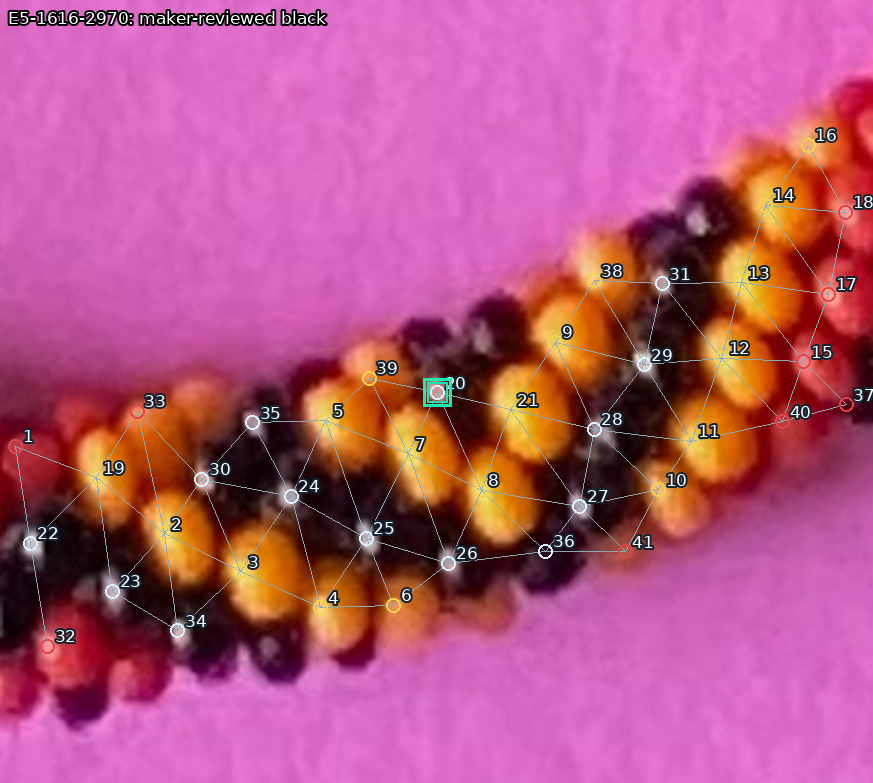
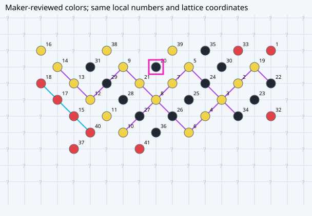

Exact local-number / stable-ID / original-coordinate key
1: C-1478-2990 (red; [1476.3333333333333, 2988.8333333333335]; [86, 80]) · 2: C-1526-3018 (yellow; [1525.7307692307693, 3017.9615384615386]; [84, 80]) · 3: C-1552-3030 (yellow; [1551.264705882353, 3030.5588235294117]; [83, 80]) · 4: C-1578-3044 (yellow; [1577.8333333333333, 3042.6111111111113]; [82, 80]) · 5: C-1580-2981 (yellow; [1579.5, 2980.2291666666665]; [83, 78]) · 6: C-1603-3043 (yellow; [1602.1818181818182, 3041.818181818182]; [81, 80]) · 7: C-1607-2991 (yellow; [1607.15625, 2991.25]; [82, 78]) · 8: C-1631-3003 (yellow; [1631.4848484848485, 3003.4848484848485]; [81, 78]) · 9: C-1657-2954 (yellow; [1656.0588235294117, 2954.078431372549]; [81, 76]) · 10: C-1691-3004 (yellow; [1690.5294117647059, 3003.176470588235]; [79, 78]) · 11: C-1702-2987 (yellow; [1701.3666666666666, 2987.1]; [79, 77]) · 12: C-1712-2959 (yellow; [1711.5, 2959.3888888888887]; [79, 76]) · 13: C-1718-2934 (yellow; [1718.1538461538462, 2934.230769230769]; [79, 75]) · 14: C-1726-2908 (yellow; [1726.2363636363636, 2908.4727272727273]; [79, 74]) · 15: C-1739-2960 (red; [1738.9333333333334, 2960.6]; [78, 76]) · 16: C-1740-2888 (yellow; [1740.4571428571428, 2888.3714285714286]; [79, 73]) · 17: C-1747-2938 (red; [1747.2105263157894, 2938.0526315789475]; [78, 75]) · 18: CORE-1752-2910 (red; [1752.8333333333333, 2910.777777777778]; [78, 74]) · 19: E5-1503-2999 (yellow; [1503.076923076923, 2999.1923076923076]; [85, 80]) · 20: E5-1616-2970 (red; [1616.857142857143, 2970.8571428571427]; [82, 77]) · 21: E5-1641-2976 (yellow; [1641.06, 2976.66]; [81, 77]) · 22: K-1473-3021 (black; [1481.0, 3021.0714285714284]; [85, 81]) · 23: K-1508-3038 (black; [1508.5, 3037.0]; [84, 81]) · 24: K-1565-3004 (black; [1568.0, 3005.5]; [83, 79]) · 25: K-1593-3018 (black; [1593.0, 3019.5]; [82, 79]) · 26: K-1620-3025 (black; [1620.6, 3027.8]; [81, 79]) · 27: K-1663-3006 (black; [1664.25, 3008.75]; [80, 78]) · 28: K-1667-2990 (black; [1669.0, 2983.0]; [80, 77]) · 29: K-1683-2959 (black; [1685.6666666666667, 2961.6666666666665]; [80, 76]) · 30: MAT25-K-1538-2998 (black; [1538.3, 2999.8]; [84, 79]) · 31: MAT25-K-1689-2933 (black; [1691.8, 2934.6]; [80, 75]) · 32: NEW-1487-3054 (red; [1486.8905596159832, 3055.3703363917716]; [84, 82]) · 33: NEW-1519-2976 (red; [1516.6804345172254, 2977.0292632657097]; [85, 79]) · 34: NEW-1530-3049 (black; [1530.3054408928767, 3050.3298633374725]; [83, 81]) · 35: NEW-1556-2981 (black; [1555.1859435442716, 2980.8575972854924]; [84, 78]) · 36: R332-B-0080-0079 (black; [1652.9931506849316, 3023.821917808219]; [80, 79]) · 37: R332-R-0077-0077 (red; [1753.0084033613446, 2974.840336134454]; [77, 77]) · 38: R332-Y-0081-0075 (yellow; [1669.156976744186, 2933.6279069767443]; [81, 75]) · 39: REC266-P143242 (yellow; [1594.0, 2966.0]; [83, 77]) · 40: REC266-P144101 (red; [1731.888888888889, 2980.5925925925926]; [78, 77]) · 41: REC266-P146299 (red; [1679.357142857143, 3023.8571428571427]; [79, 79])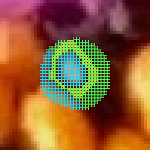
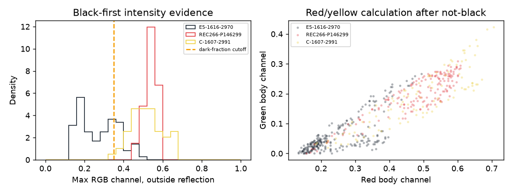
Used/excluded pixel counts and black-first test
{'id': 'E5-1616-2970', 'name': 'pixel-maker-01', 'bbox': [np.int64(1593), np.int64(2947), np.int64(1642), np.int64(2996)], 'black_decision': 'black', 'classifier_prediction': 'black', 'body_count': 253, 'excluded_highlight_count': 182, 'annulus': {'ring_pixels': [[1615, 2960], [1616, 2960], [1613, 2961], [1614, 2961], [1615, 2961], [1616, 2961], [1617, 2961], [1612, 2962], [1613, 2962], [1614, 2962], [1615, 2962], [1616, 2962], [1617, 2962], [1618, 2962], [1611, 2963], [1612, 2963], [1613, 2963], [1614, 2963], [1617, 2963], [1618, 2963], [1619, 2963], [1611, 2964], [1612, 2964], [1618, 2964], [1619, 2964], [1620, 2964], [1610, 2965], [1611, 2965], [1619, 2965], [1620, 2965], [1621, 2965], [1610, 2966], [1620, 2966], [1621, 2966], [1622, 2966], [1610, 2967], [1620, 2967], [1621, 2967], [1622, 2967], [1610, 2968], [1621, 2968], [1622, 2968], [1623, 2968], [1610, 2969], [1622, 2969], [1623, 2969], [1624, 2969], [1609, 2970], [1610, 2970], [1622, 2970], [1623, 2970], [1624, 2970], [1609, 2971], [1610, 2971], [1622, 2971], [1623, 2971], [1624, 2971], [1609, 2972], [1610, 2972], [1622, 2972], [1623, 2972], [1624, 2972], [1611, 2973], [1622, 2973], [1623, 2973], [1624, 2973], [1612, 2974], [1621, 2974], [1622, 2974], [1623, 2974], [1613, 2975], [1620, 2975], [1621, 2975], [1622, 2975], [1615, 2976], [1616, 2976], [1617, 2976], [1618, 2976], [1619, 2976], [1620, 2976], [1621, 2976], [1616, 2977], [1617, 2977], [1618, 2977], [1619, 2977], [1620, 2977], [1617, 2978], [1618, 2978], [1619, 2978]], 'reflection_pixels': [[1615, 2964], [1616, 2964], [1613, 2965], [1614, 2965], [1615, 2965], [1616, 2965], [1617, 2965], [1612, 2966], [1613, 2966], [1614, 2966], [1615, 2966], [1616, 2966], [1617, 2966], [1618, 2966], [1612, 2967], [1613, 2967], [1614, 2967], [1615, 2967], [1616, 2967], [1617, 2967], [1618, 2967], [1612, 2968], [1613, 2968], [1614, 2968], [1615, 2968], [1616, 2968], [1617, 2968], [1618, 2968], [1619, 2968], [1612, 2969], [1613, 2969], [1614, 2969], [1615, 2969], [1616, 2969], [1617, 2969], [1618, 2969], [1619, 2969], [1620, 2969], [1612, 2970], [1613, 2970], [1614, 2970], [1615, 2970], [1616, 2970], [1617, 2970], [1618, 2970], [1619, 2970], [1620, 2970], [1612, 2971], [1613, 2971], [1614, 2971], [1615, 2971], [1616, 2971], [1617, 2971], [1618, 2971], [1619, 2971], [1620, 2971], [1612, 2972], [1613, 2972], [1614, 2972], [1615, 2972], [1616, 2972], [1617, 2972], [1618, 2972], [1619, 2972], [1620, 2972], [1613, 2973], [1614, 2973], [1615, 2973], [1616, 2973], [1617, 2973], [1618, 2973], [1619, 2973], [1620, 2973], [1614, 2974], [1615, 2974], [1616, 2974], [1617, 2974], [1618, 2974], [1619, 2974]], 'ring_count': 89, 'sectors': 8, 'median_intensity': 0.11447843137254902, 'q75_intensity': 0.15630196078431371, 'dark_fraction': 0.7303370786516854, 'median_max_channel': 0.2627450980392157, 'q75_max_channel': 0.3568627450980392, 'raw_positive': True, 'raw_negative': False, 'geometry_valid': True, 'hue_used': False}, 'lighting': {'value': 0.5490196078431373, 'ids': ['C-1607-2991', 'REC266-P143242', 'E5-1641-2976', 'C-1631-3003', 'C-1580-2981', 'C-1657-2954', 'R332-Y-0081-0075', 'C-1603-3043', 'C-1578-3044', 'REC266-P146299'], 'RGB': [0.5490196078431373, 0.20588235294117646, 0.01568627450980392], 'intensity': 0.29607058823529414}, 'comparisons': [{'id': 'REC266-P146299', 'xy': [1679.357142857143, 3023.8571428571427], 'color': 'red', 'section': 4}, {'id': 'C-1607-2991', 'xy': [1607.15625, 2991.25], 'color': 'yellow', 'section': 5}], 'abstention_reasons': []}NEW-1706-342
NEW-1706-342 / target panel / local feature 28. red → black. maker-confirmed ordinary color misclassification. Measured support and lattice association stay fixed.


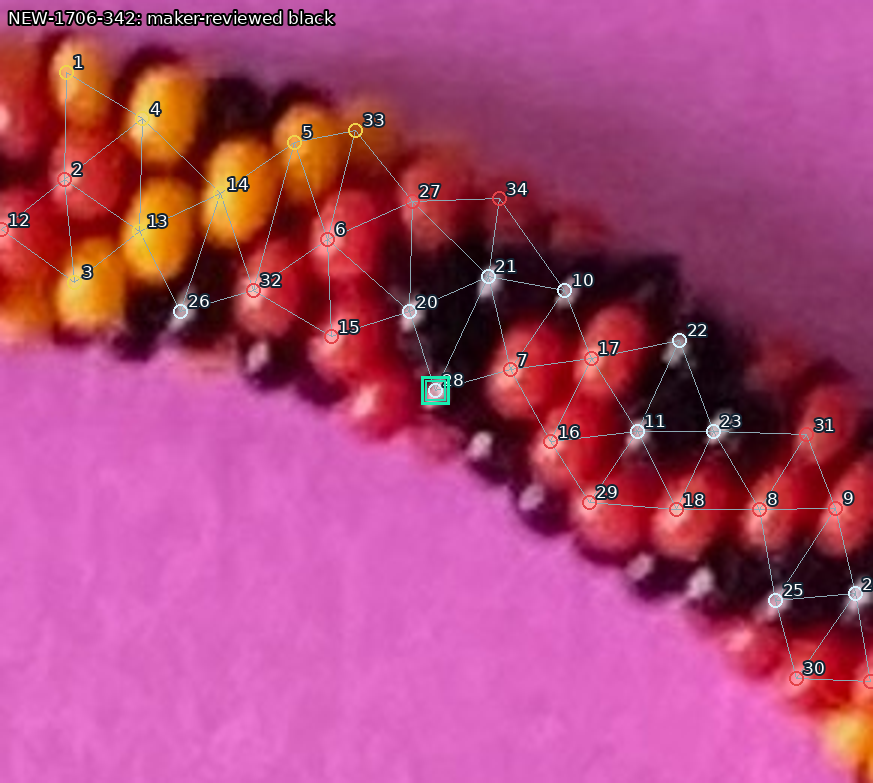
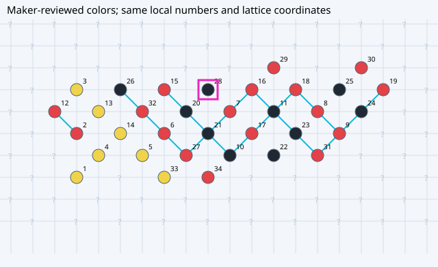

Exact local-number / stable-ID / original-coordinate key
1: C-1582-0235 (yellow; [1582.1186440677966, 237.10169491525423]; [5, 8]) · 2: C-1582-0272 (red; [1581.625, 272.75]; [6, 7]) · 3: C-1585-0307 (yellow; [1584.875, 307.0]; [7, 6]) · 4: C-1608-0253 (yellow; [1607.6136363636363, 252.5909090909091]; [6, 8]) · 5: C-1659-0261 (yellow; [1658.3333333333333, 260.5]; [7, 9]) · 6: C-1669-0293 (red; [1669.2758620689656, 292.6896551724138]; [8, 9]) · 7: C-1729-0337 (red; [1730.0416666666667, 336.2916666666667]; [10, 10]) · 8: C-1813-0383 (red; [1813.3, 382.8]; [12, 12]) · 9: C-1839-0383 (red; [1838.5238095238096, 382.3809523809524]; [12, 13]) · 10: D40-K-1746-0312 (black; [1748.3333333333333, 309.6666666666667]; [9, 11]) · 11: D40-K-1772-0357 (black; [1772.4, 356.8]; [11, 11]) · 12: E5-1561-0289 (red; [1560.423076923077, 289.53846153846155]; [6, 6]) · 13: E5-1607-0290 (yellow; [1606.5121951219512, 290.0975609756098]; [7, 7]) · 14: E5-1633-0278 (yellow; [1633.3673469387754, 277.61224489795916]; [7, 8]) · 15: E5-1671-0325 (red; [1670.4583333333333, 325.2916666666667]; [9, 8]) · 16: E5-1744-0360 (red; [1743.6521739130435, 360.2608695652174]; [11, 10]) · 17: E5-1757-0332 (red; [1757.0416666666667, 332.375]; [10, 11]) · 18: E5-1785-0383 (red; [1785.4545454545455, 382.90909090909093]; [12, 11]) · 19: E5-1851-0439 (red; [1850.0277777777778, 440.0833333333333]; [14, 13]) · 20: K-1695-0317 (black; [1696.3529411764705, 316.88235294117646]; [9, 9]) · 21: K-1721-0308 (black; [1722.75, 305.0]; [9, 10]) · 22: K-1783-0330 (black; [1786.5, 326.5]; [10, 12]) · 23: K-1797-0357 (black; [1797.75, 356.75]; [11, 12]) · 24: K-1845-0412 (black; [1845.0, 410.9166666666667]; [13, 13]) · 25: MAT25-K-1817-0415 (black; [1818.5454545454545, 413.09090909090907]; [13, 12]) · 26: NEW-1621-315 (black; [1620.263850499234, 316.830688388505]; [8, 7]) · 27: NEW-1697-280 (red; [1697.4404430691404, 280.12586143542813]; [8, 10]) · 28: NEW-1706-342 (red; [1705.0878972903113, 343.1221304174833]; [10, 9]) · 29: NEW-1756-380 (red; [1756.4397937699332, 380.41040178464914]; [12, 10]) · 30: NEW-1826-438 (red; [1825.3586970051726, 439.05740889086127]; [14, 12]) · 31: NEW-1829-357 (red; [1828.8735409075573, 357.9431066242505]; [11, 13]) · 32: P5-1645-0309 (red; [1644.4761904761904, 309.6666666666667]; [8, 8]) · 33: R332-Y-0007-0010 (yellow; [1678.6573426573427, 256.3636363636364]; [7, 10]) · 34: REC266-P013688 (red; [1726.4255319148936, 279.25531914893617]; [8, 11])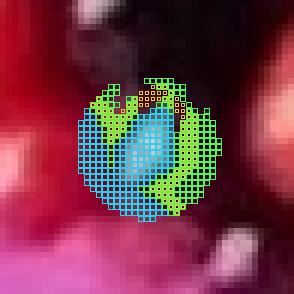
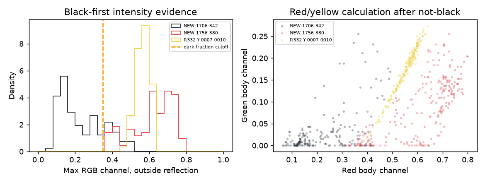
Used/excluded pixel counts and black-first test
{'id': 'NEW-1706-342', 'name': 'pixel-maker-02', 'bbox': [np.int64(1681), np.int64(319), np.int64(1730), np.int64(368)], 'black_decision': 'black', 'classifier_prediction': 'black', 'body_count': 199, 'excluded_highlight_count': 201, 'annulus': {'ring_pixels': [[1706, 333], [1707, 333], [1708, 333], [1704, 334], [1705, 334], [1706, 334], [1707, 334], [1708, 334], [1709, 334], [1697, 335], [1703, 335], [1704, 335], [1705, 335], [1706, 335], [1707, 335], [1708, 335], [1709, 335], [1710, 335], [1696, 336], [1697, 336], [1698, 336], [1702, 336], [1703, 336], [1704, 336], [1705, 336], [1709, 336], [1710, 336], [1711, 336], [1697, 337], [1698, 337], [1699, 337], [1701, 337], [1702, 337], [1703, 337], [1710, 337], [1711, 337], [1712, 337], [1698, 338], [1699, 338], [1700, 338], [1701, 338], [1702, 338], [1711, 338], [1712, 338], [1713, 338], [1698, 339], [1699, 339], [1700, 339], [1701, 339], [1711, 339], [1712, 339], [1713, 339], [1699, 340], [1700, 340], [1701, 340], [1711, 340], [1712, 340], [1713, 340], [1699, 341], [1700, 341], [1711, 341], [1712, 341], [1713, 341], [1699, 342], [1711, 342], [1712, 342], [1713, 342], [1711, 343], [1712, 343], [1713, 343], [1711, 344], [1712, 344], [1713, 344], [1711, 345], [1712, 345], [1713, 345], [1711, 346], [1712, 346], [1713, 346], [1710, 347], [1711, 347], [1712, 347], [1709, 348], [1710, 348], [1711, 348], [1707, 349], [1708, 349], [1709, 349], [1710, 349], [1706, 350], [1707, 350], [1708, 350], [1709, 350], [1707, 351], [1708, 351], [1709, 351], [1708, 352], [1709, 352], [1710, 352], [1709, 353], [1710, 353], [1711, 353], [1710, 354]], 'reflection_pixels': [[1695, 337], [1706, 337], [1707, 337], [1708, 337], [1695, 338], [1696, 338], [1704, 338], [1705, 338], [1706, 338], [1707, 338], [1708, 338], [1709, 338], [1694, 339], [1695, 339], [1696, 339], [1703, 339], [1704, 339], [1705, 339], [1706, 339], [1707, 339], [1708, 339], [1709, 339], [1694, 340], [1695, 340], [1696, 340], [1697, 340], [1703, 340], [1704, 340], [1705, 340], [1706, 340], [1707, 340], [1708, 340], [1709, 340], [1694, 341], [1695, 341], [1696, 341], [1697, 341], [1702, 341], [1703, 341], [1704, 341], [1705, 341], [1706, 341], [1707, 341], [1708, 341], [1709, 341], [1694, 342], [1695, 342], [1696, 342], [1697, 342], [1701, 342], [1702, 342], [1703, 342], [1704, 342], [1705, 342], [1706, 342], [1707, 342], [1708, 342], [1709, 342], [1694, 343], [1695, 343], [1696, 343], [1697, 343], [1698, 343], [1700, 343], [1701, 343], [1702, 343], [1703, 343], [1704, 343], [1705, 343], [1706, 343], [1707, 343], [1708, 343], [1709, 343], [1694, 344], [1695, 344], [1696, 344], [1697, 344], [1698, 344], [1700, 344], [1701, 344], [1702, 344], [1703, 344], [1704, 344], [1705, 344], [1706, 344], [1707, 344], [1708, 344], [1709, 344], [1694, 345], [1695, 345], [1696, 345], [1697, 345], [1698, 345], [1700, 345], [1701, 345], [1702, 345], [1703, 345], [1704, 345], [1705, 345], [1706, 345], [1707, 345], [1708, 345], [1709, 345], [1694, 346], [1695, 346], [1696, 346], [1697, 346], [1698, 346], [1700, 346], [1701, 346], [1702, 346], [1703, 346], [1704, 346], [1705, 346], [1706, 346], [1707, 346], [1708, 346], [1709, 346], [1694, 347], [1695, 347], [1696, 347], [1697, 347], [1698, 347], [1699, 347], [1700, 347], [1701, 347], [1702, 347], [1703, 347], [1704, 347], [1705, 347], [1706, 347], [1707, 347], [1708, 347], [1695, 348], [1696, 348], [1697, 348], [1698, 348], [1699, 348], [1700, 348], [1701, 348], [1702, 348], [1703, 348], [1704, 348], [1705, 348], [1706, 348], [1695, 349], [1696, 349], [1697, 349], [1698, 349], [1699, 349], [1700, 349], [1701, 349], [1702, 349], [1703, 349], [1704, 349], [1705, 349], [1696, 350], [1697, 350], [1698, 350], [1699, 350], [1700, 350], [1701, 350], [1702, 350], [1703, 350], [1697, 351], [1698, 351], [1699, 351], [1700, 351], [1701, 351], [1702, 351], [1703, 351], [1704, 351], [1698, 352], [1699, 352], [1700, 352], [1701, 352], [1702, 352], [1703, 352], [1704, 352], [1705, 352], [1706, 352], [1699, 353], [1700, 353], [1701, 353], [1702, 353], [1703, 353], [1704, 353], [1705, 353], [1706, 353], [1707, 353], [1701, 354], [1702, 354], [1703, 354], [1704, 354], [1705, 354], [1706, 354], [1707, 354], [1708, 354], [1704, 355], [1705, 355], [1706, 355]], 'ring_count': 103, 'sectors': 5, 'median_intensity': 0.08736470588235296, 'q75_intensity': 0.1271470588235294, 'dark_fraction': 0.7864077669902912, 'median_max_channel': 0.19215686274509805, 'q75_max_channel': 0.32156862745098036, 'raw_positive': True, 'raw_negative': False, 'geometry_valid': True, 'hue_used': False}, 'lighting': {'value': 0.6, 'ids': ['NEW-1756-380', 'E5-1785-0383', 'R332-Y-0007-0010', 'C-1659-0261', 'E5-1633-0278', 'E5-1607-0290', 'C-1585-0307', 'C-1582-0272', 'NEW-1826-438', 'C-1582-0235'], 'RGB': [0.6, 0.11960784313725491, 0.03333333333333333], 'intensity': 0.2739549019607843}, 'comparisons': [{'id': 'NEW-1756-380', 'xy': [1756.4397937699332, 380.41040178464914], 'color': 'red', 'section': 1}, {'id': 'R332-Y-0007-0010', 'xy': [1678.6573426573427, 256.3636363636364], 'color': 'yellow', 'section': 0}], 'abstention_reasons': []}NEW-2207-1350
NEW-2207-1350 / target panel / local feature 25. red → black. maker-confirmed ordinary color misclassification. Measured support and lattice association stay fixed.


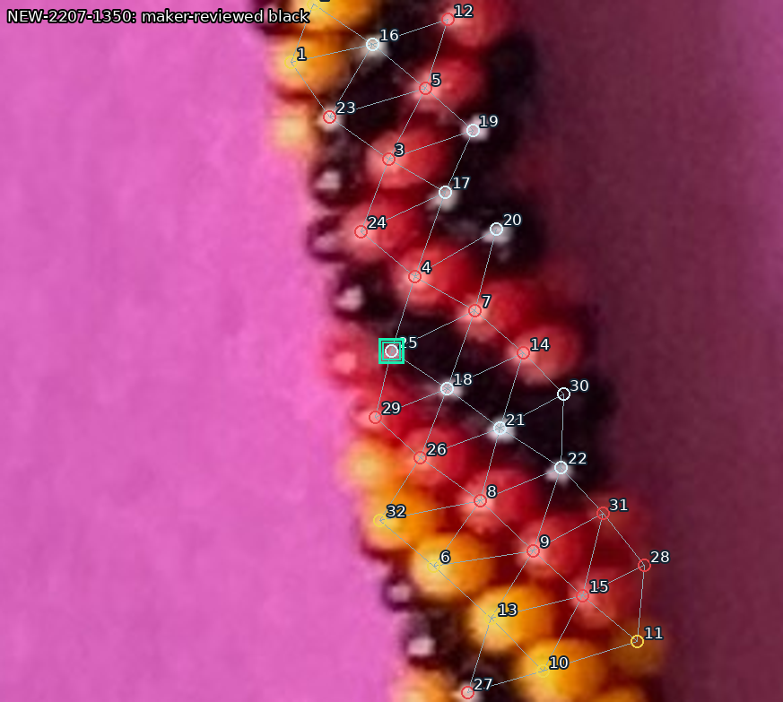
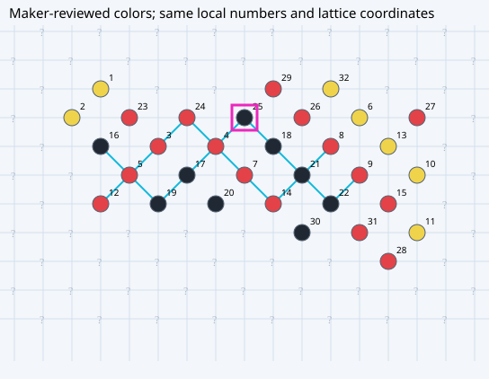

Exact local-number / stable-ID / original-coordinate key
1: C-2170-1243 (yellow; [2170.075, 1243.175]; [35, 32]) · 2: C-2179-1221 (yellow; [2178.553191489362, 1221.4468085106382]; [34, 32]) · 3: C-2207-1279 (red; [2206.45, 1279.0]; [35, 34]) · 4: C-2216-1323 (red; [2216.3125, 1322.8125]; [36, 35]) · 5: C-2221-1252 (red; [2220.0833333333335, 1252.9166666666667]; [34, 34]) · 6: C-2224-1430 (yellow; [2223.32, 1430.4]; [39, 37]) · 7: C-2238-1336 (red; [2238.6666666666665, 1335.5]; [36, 36]) · 8: C-2240-1406 (red; [2240.625, 1406.0625]; [38, 37]) · 9: C-2260-1425 (red; [2260.24, 1424.72]; [38, 38]) · 10: C-2264-1469 (yellow; [2263.7413793103447, 1469.655172413793]; [39, 39]) · 11: C-2300-1458 (yellow; [2298.967741935484, 1458.6290322580646]; [38, 40]) · 12: E5-2230-1226 (red; [2228.4, 1227.2]; [33, 34]) · 13: E5-2245-1450 (yellow; [2244.626506024096, 1449.9397590361446]; [39, 38]) · 14: E5-2257-1351 (red; [2256.5882352941176, 1351.2941176470588]; [36, 37]) · 15: E5-2279-1442 (red; [2278.6, 1441.45]; [38, 39]) · 16: K-2199-1236 (black; [2200.5714285714284, 1236.4285714285713]; [34, 33]) · 17: K-2225-1294 (black; [2227.5, 1291.5]; [35, 35]) · 18: K-2227-1364 (black; [2228.0, 1364.5]; [37, 36]) · 19: K-2236-1268 (black; [2237.8, 1268.4]; [34, 35]) · 20: K-2244-1307 (black; [2246.5, 1305.0]; [35, 36]) · 21: K-2246-1381 (black; [2247.6875, 1379.3125]; [37, 37]) · 22: K-2266-1395 (black; [2270.6, 1393.8]; [37, 38]) · 23: NEW-2185-1265 (red; [2184.620578258351, 1263.4302208272268]; [35, 33]) · 24: NEW-2196-1305 (red; [2196.2182601464065, 1306.0089446872544]; [36, 34]) · 25: NEW-2207-1350 (red; [2207.5640712978616, 1350.5337663761716]; [37, 35]) · 26: NEW-2219-1390 (red; [2218.3192493465212, 1390.1880553161857]; [38, 36]) · 27: NEW-2235-1476 (red; [2235.69139313535, 1477.532776764834]; [40, 38]) · 28: R332-R-0037-0040 (red; [2301.3455497382197, 1430.2251308900525]; [37, 40]) · 29: R332-R-0038-0035 (red; [2201.527950310559, 1375.136645962733]; [38, 35]) · 30: REC266-P065989 (black; [2271.4545454545455, 1366.6363636363637]; [36, 38]) · 31: REC266-P068073 (red; [2286.103448275862, 1410.8620689655172]; [37, 39]) · 32: REC266-P068228 (yellow; [2203.233333333333, 1413.4]; [39, 36])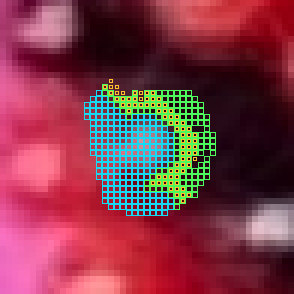
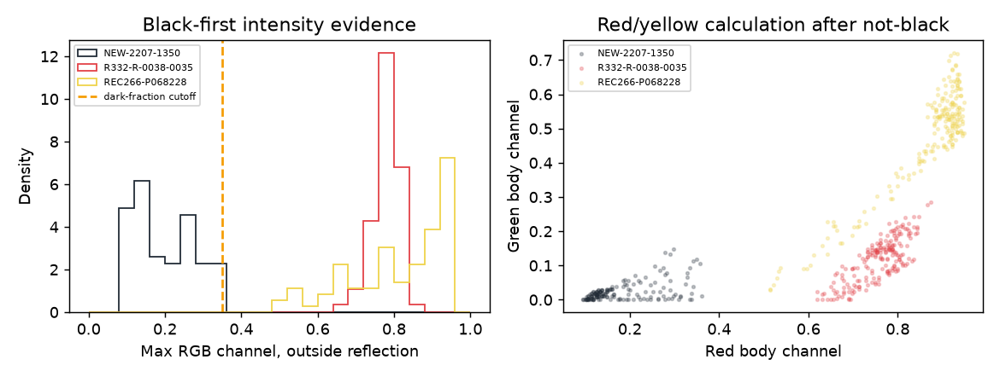
Used/excluded pixel counts and black-first test
{'id': 'NEW-2207-1350', 'name': 'pixel-maker-03', 'bbox': [np.int64(2184), np.int64(1327), np.int64(2233), np.int64(1376)], 'black_decision': 'black', 'classifier_prediction': 'black', 'body_count': 160, 'excluded_highlight_count': 206, 'annulus': {'ring_pixels': [[2202, 1340], [2201, 1341], [2202, 1341], [2203, 1341], [2202, 1342], [2203, 1342], [2204, 1342], [2206, 1342], [2207, 1342], [2208, 1342], [2209, 1342], [2203, 1343], [2204, 1343], [2205, 1343], [2206, 1343], [2207, 1343], [2208, 1343], [2209, 1343], [2210, 1343], [2204, 1344], [2205, 1344], [2206, 1344], [2207, 1344], [2208, 1344], [2209, 1344], [2210, 1344], [2211, 1344], [2205, 1345], [2210, 1345], [2211, 1345], [2212, 1345], [2211, 1346], [2212, 1346], [2213, 1346], [2212, 1347], [2213, 1347], [2214, 1347], [2213, 1348], [2214, 1348], [2215, 1348], [2214, 1349], [2215, 1349], [2216, 1349], [2214, 1350], [2215, 1350], [2216, 1350], [2214, 1351], [2215, 1351], [2216, 1351], [2214, 1352], [2215, 1352], [2216, 1352], [2214, 1353], [2215, 1353], [2216, 1353], [2213, 1354], [2214, 1354], [2215, 1354], [2212, 1355], [2213, 1355], [2214, 1355], [2210, 1356], [2211, 1356], [2212, 1356], [2213, 1356], [2209, 1357], [2210, 1357], [2211, 1357], [2212, 1357], [2213, 1357], [2212, 1358], [2213, 1358], [2214, 1358], [2213, 1359], [2214, 1359], [2215, 1359], [2214, 1360]], 'reflection_pixels': [[2200, 1342], [2199, 1343], [2200, 1343], [2201, 1343], [2198, 1344], [2199, 1344], [2200, 1344], [2201, 1344], [2202, 1344], [2198, 1345], [2199, 1345], [2200, 1345], [2201, 1345], [2202, 1345], [2203, 1345], [2198, 1346], [2199, 1346], [2200, 1346], [2201, 1346], [2202, 1346], [2203, 1346], [2204, 1346], [2206, 1346], [2207, 1346], [2208, 1346], [2209, 1346], [2199, 1347], [2200, 1347], [2201, 1347], [2202, 1347], [2203, 1347], [2204, 1347], [2205, 1347], [2206, 1347], [2207, 1347], [2208, 1347], [2209, 1347], [2210, 1347], [2199, 1348], [2200, 1348], [2201, 1348], [2202, 1348], [2203, 1348], [2204, 1348], [2205, 1348], [2206, 1348], [2207, 1348], [2208, 1348], [2209, 1348], [2210, 1348], [2211, 1348], [2199, 1349], [2200, 1349], [2201, 1349], [2202, 1349], [2203, 1349], [2204, 1349], [2205, 1349], [2206, 1349], [2207, 1349], [2208, 1349], [2209, 1349], [2210, 1349], [2211, 1349], [2212, 1349], [2199, 1350], [2200, 1350], [2201, 1350], [2202, 1350], [2203, 1350], [2204, 1350], [2205, 1350], [2206, 1350], [2207, 1350], [2208, 1350], [2209, 1350], [2210, 1350], [2211, 1350], [2212, 1350], [2199, 1351], [2200, 1351], [2201, 1351], [2202, 1351], [2203, 1351], [2204, 1351], [2205, 1351], [2206, 1351], [2207, 1351], [2208, 1351], [2209, 1351], [2210, 1351], [2211, 1351], [2212, 1351], [2199, 1352], [2200, 1352], [2201, 1352], [2202, 1352], [2203, 1352], [2204, 1352], [2205, 1352], [2206, 1352], [2207, 1352], [2208, 1352], [2209, 1352], [2210, 1352], [2211, 1352], [2212, 1352], [2200, 1353], [2201, 1353], [2202, 1353], [2203, 1353], [2204, 1353], [2205, 1353], [2206, 1353], [2207, 1353], [2208, 1353], [2209, 1353], [2210, 1353], [2211, 1353], [2212, 1353], [2200, 1354], [2201, 1354], [2202, 1354], [2203, 1354], [2204, 1354], [2205, 1354], [2206, 1354], [2207, 1354], [2208, 1354], [2209, 1354], [2210, 1354], [2211, 1354], [2200, 1355], [2201, 1355], [2202, 1355], [2203, 1355], [2204, 1355], [2205, 1355], [2206, 1355], [2207, 1355], [2208, 1355], [2209, 1355], [2200, 1356], [2201, 1356], [2202, 1356], [2203, 1356], [2204, 1356], [2205, 1356], [2206, 1356], [2207, 1356], [2208, 1356], [2201, 1357], [2202, 1357], [2203, 1357], [2204, 1357], [2205, 1357], [2206, 1357], [2207, 1357], [2201, 1358], [2202, 1358], [2203, 1358], [2204, 1358], [2205, 1358], [2206, 1358], [2207, 1358], [2201, 1359], [2202, 1359], [2203, 1359], [2204, 1359], [2205, 1359], [2206, 1359], [2207, 1359], [2208, 1359], [2209, 1359], [2210, 1359], [2211, 1359], [2201, 1360], [2202, 1360], [2203, 1360], [2204, 1360], [2205, 1360], [2206, 1360], [2207, 1360], [2208, 1360], [2209, 1360], [2210, 1360], [2211, 1360], [2212, 1360], [2202, 1361], [2203, 1361], [2204, 1361], [2205, 1361], [2206, 1361], [2207, 1361], [2208, 1361], [2209, 1361], [2210, 1361], [2211, 1361], [2212, 1361], [2205, 1362], [2206, 1362], [2207, 1362], [2208, 1362], [2209, 1362], [2210, 1362], [2211, 1362]], 'ring_count': 77, 'sectors': 5, 'median_intensity': 0.07381176470588235, 'q75_intensity': 0.1064549019607843, 'dark_fraction': 0.987012987012987, 'median_max_channel': 0.18823529411764706, 'q75_max_channel': 0.2627450980392157, 'raw_positive': True, 'raw_negative': False, 'geometry_valid': True, 'hue_used': False}, 'lighting': {'value': 0.6, 'ids': ['R332-R-0038-0035', 'C-2216-1323', 'C-2238-1336', 'NEW-2219-1390', 'NEW-2196-1305', 'REC266-P068228', 'C-2240-1406', 'C-2207-1279', 'C-2224-1430', 'C-2260-1425'], 'RGB': [0.6, 0.12941176470588234, 0.16176470588235292], 'intensity': 0.30498627450980387}, 'comparisons': [{'id': 'R332-R-0038-0035', 'xy': [2201.527950310559, 1375.136645962733], 'color': 'red', 'section': 2}, {'id': 'REC266-P068228', 'xy': [2203.233333333333, 1413.4], 'color': 'yellow', 'section': 2}], 'abstention_reasons': []}NEW-2237-2128
MAT25-K-2237-2196 / comparison panel / local feature 25. red → black. maker-confirmed ordinary color misclassification. Measured support and lattice association stay fixed.


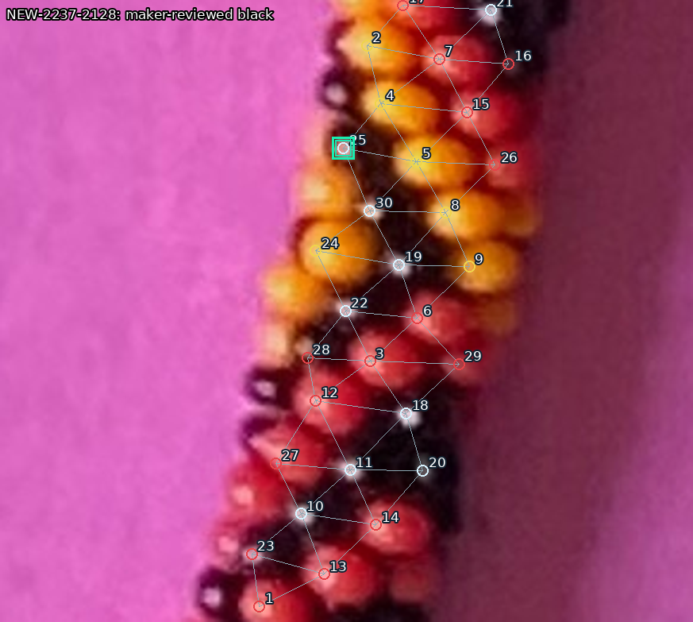
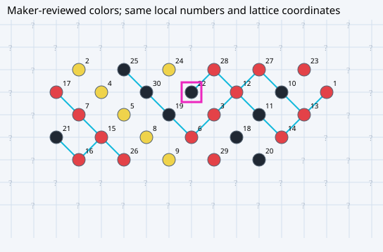

Exact local-number / stable-ID / original-coordinate key
1: C-2201-2320 (red; [2200.95, 2319.45]; [60, 58]) · 2: C-2247-2085 (yellow; [2246.0363636363636, 2084.072727272727]; [55, 52]) · 3: C-2247-2216 (red; [2247.3684210526317, 2216.5789473684213]; [57, 56]) · 4: C-2252-2109 (yellow; [2251.6833333333334, 2108.5]; [55, 53]) · 5: C-2267-2133 (yellow; [2266.9268292682927, 2132.7073170731705]; [55, 54]) · 6: C-2269-2200 (red; [2267.2, 2198.6]; [56, 56]) · 7: C-2276-2090 (red; [2276.4333333333334, 2089.7]; [54, 53]) · 8: C-2279-2155 (yellow; [2279.121212121212, 2154.2727272727275]; [55, 55]) · 9: C-2291-2178 (yellow; [2289.153846153846, 2176.923076923077]; [55, 56]) · 10: D40-K-2217-2280 (black; [2218.4444444444443, 2280.6111111111113]; [59, 57]) · 11: D40-K-2239-2263 (black; [2239.0, 2262.222222222222]; [58, 57]) · 12: E5-2225-2233 (red; [2224.5416666666665, 2233.0833333333335]; [58, 56]) · 13: E5-2228-2306 (red; [2228.1153846153848, 2305.9615384615386]; [59, 58]) · 14: E5-2250-2285 (red; [2249.913043478261, 2285.1739130434785]; [58, 58]) · 15: E5-2288-2112 (red; [2288.0454545454545, 2112.0454545454545]; [54, 54]) · 16: E5-2306-2092 (red; [2305.6363636363635, 2091.818181818182]; [53, 54]) · 17: H5-2261-2067 (red; [2261.2413793103447, 2067.2413793103447]; [54, 52]) · 18: K-2260-2239 (black; [2262.5454545454545, 2238.4545454545455]; [57, 57]) · 19: K-2261-2177 (black; [2259.6153846153848, 2176.153846153846]; [56, 55]) · 20: K-2268-2262 (black; [2269.5833333333335, 2262.3333333333335]; [57, 58]) · 21: K-2295-2071 (black; [2298.0, 2069.0]; [53, 53]) · 22: MAT25-K-2237-2196 (black; [2237.0, 2195.5]; [57, 55]) · 23: NEW-2199-2298 (red; [2197.802176296852, 2297.486893957083]; [60, 57]) · 24: NEW-2226-2171 (yellow; [2224.624423938458, 2170.26010932972]; [57, 54]) · 25: NEW-2237-2128 (red; [2236.2319218292814, 2127.104593775509]; [56, 53]) · 26: NEW-2301-2134 (red; [2299.87297728621, 2134.3030350116123]; [54, 55]) · 27: R332-R-0059-0056 (red; [2207.971291866029, 2259.397129186603]; [59, 56]) · 28: REC266-P106767 (red; [2221.0, 2215.0]; [58, 55]) · 29: REC266-P106989 (red; [2284.7619047619046, 2217.809523809524]; [56, 57]) · 30: RF70T-K-2247-2151 (black; [2247.285714285714, 2153.4285714285716]; [56, 54])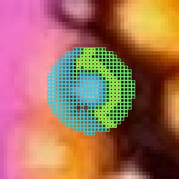
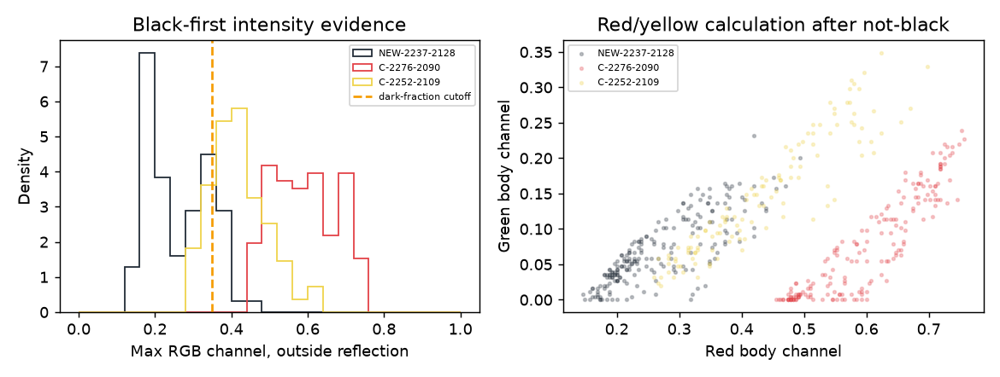
Used/excluded pixel counts and black-first test
{'id': 'NEW-2237-2128', 'name': 'pixel-maker-04', 'bbox': [np.int64(2212), np.int64(2103), np.int64(2261), np.int64(2152)], 'black_decision': 'unknown', 'classifier_prediction': '?', 'body_count': 208, 'excluded_highlight_count': 242, 'annulus': {'ring_pixels': [[2235, 2116], [2236, 2116], [2237, 2116], [2235, 2117], [2236, 2117], [2237, 2117], [2234, 2118], [2235, 2118], [2236, 2118], [2233, 2119], [2234, 2119], [2235, 2119], [2236, 2119], [2237, 2119], [2238, 2119], [2233, 2120], [2234, 2120], [2235, 2120], [2236, 2120], [2237, 2120], [2238, 2120], [2239, 2120], [2233, 2121], [2235, 2121], [2236, 2121], [2237, 2121], [2238, 2121], [2239, 2121], [2240, 2121], [2239, 2122], [2240, 2122], [2241, 2122], [2240, 2123], [2241, 2123], [2242, 2123], [2241, 2124], [2242, 2124], [2243, 2124], [2242, 2125], [2243, 2125], [2244, 2125], [2242, 2126], [2243, 2126], [2244, 2126], [2242, 2127], [2243, 2127], [2244, 2127], [2242, 2128], [2243, 2128], [2244, 2128], [2242, 2129], [2243, 2129], [2244, 2129], [2242, 2130], [2243, 2130], [2244, 2130], [2241, 2131], [2242, 2131], [2243, 2131], [2240, 2132], [2241, 2132], [2242, 2132], [2238, 2133], [2239, 2133], [2240, 2133], [2241, 2133], [2238, 2134], [2239, 2134], [2240, 2134], [2239, 2135], [2240, 2135], [2241, 2135], [2240, 2136], [2241, 2136], [2242, 2136], [2241, 2137], [2242, 2137], [2243, 2137]], 'reflection_pixels': [[2232, 2116], [2233, 2116], [2230, 2117], [2231, 2117], [2232, 2117], [2233, 2117], [2229, 2118], [2230, 2118], [2231, 2118], [2232, 2118], [2228, 2119], [2229, 2119], [2230, 2119], [2231, 2119], [2227, 2120], [2228, 2120], [2229, 2120], [2230, 2120], [2231, 2120], [2226, 2121], [2227, 2121], [2228, 2121], [2229, 2121], [2230, 2121], [2231, 2121], [2226, 2122], [2227, 2122], [2228, 2122], [2229, 2122], [2230, 2122], [2231, 2122], [2234, 2122], [2225, 2123], [2226, 2123], [2227, 2123], [2228, 2123], [2229, 2123], [2230, 2123], [2231, 2123], [2233, 2123], [2234, 2123], [2235, 2123], [2236, 2123], [2237, 2123], [2238, 2123], [2225, 2124], [2226, 2124], [2227, 2124], [2228, 2124], [2229, 2124], [2230, 2124], [2231, 2124], [2233, 2124], [2234, 2124], [2235, 2124], [2236, 2124], [2237, 2124], [2238, 2124], [2239, 2124], [2225, 2125], [2226, 2125], [2227, 2125], [2228, 2125], [2229, 2125], [2230, 2125], [2231, 2125], [2232, 2125], [2233, 2125], [2234, 2125], [2235, 2125], [2236, 2125], [2237, 2125], [2238, 2125], [2239, 2125], [2240, 2125], [2225, 2126], [2226, 2126], [2227, 2126], [2228, 2126], [2229, 2126], [2230, 2126], [2231, 2126], [2232, 2126], [2233, 2126], [2234, 2126], [2235, 2126], [2236, 2126], [2237, 2126], [2238, 2126], [2239, 2126], [2240, 2126], [2225, 2127], [2226, 2127], [2227, 2127], [2228, 2127], [2229, 2127], [2230, 2127], [2231, 2127], [2232, 2127], [2233, 2127], [2234, 2127], [2235, 2127], [2236, 2127], [2237, 2127], [2238, 2127], [2239, 2127], [2240, 2127], [2225, 2128], [2226, 2128], [2227, 2128], [2228, 2128], [2229, 2128], [2230, 2128], [2231, 2128], [2232, 2128], [2233, 2128], [2234, 2128], [2235, 2128], [2236, 2128], [2237, 2128], [2238, 2128], [2239, 2128], [2240, 2128], [2225, 2129], [2226, 2129], [2227, 2129], [2228, 2129], [2229, 2129], [2230, 2129], [2231, 2129], [2232, 2129], [2233, 2129], [2234, 2129], [2235, 2129], [2236, 2129], [2237, 2129], [2238, 2129], [2239, 2129], [2240, 2129], [2225, 2130], [2226, 2130], [2227, 2130], [2228, 2130], [2229, 2130], [2230, 2130], [2231, 2130], [2232, 2130], [2233, 2130], [2234, 2130], [2235, 2130], [2236, 2130], [2237, 2130], [2238, 2130], [2239, 2130], [2240, 2130], [2225, 2131], [2226, 2131], [2227, 2131], [2228, 2131], [2229, 2131], [2230, 2131], [2231, 2131], [2232, 2131], [2233, 2131], [2234, 2131], [2235, 2131], [2236, 2131], [2237, 2131], [2238, 2131], [2239, 2131], [2226, 2132], [2227, 2132], [2228, 2132], [2229, 2132], [2230, 2132], [2231, 2132], [2232, 2132], [2234, 2132], [2236, 2132], [2237, 2132], [2226, 2133], [2227, 2133], [2228, 2133], [2229, 2133], [2230, 2133], [2231, 2133], [2232, 2133], [2233, 2133], [2234, 2133], [2235, 2133], [2227, 2134], [2228, 2134], [2229, 2134], [2230, 2134], [2231, 2134], [2232, 2134], [2233, 2134], [2234, 2134], [2235, 2134], [2236, 2134], [2228, 2135], [2229, 2135], [2230, 2135], [2231, 2135], [2232, 2135], [2233, 2135], [2234, 2135], [2235, 2135], [2236, 2135], [2237, 2135], [2229, 2136], [2230, 2136], [2231, 2136], [2232, 2136], [2233, 2136], [2234, 2136], [2235, 2136], [2236, 2136], [2237, 2136], [2238, 2136], [2230, 2137], [2231, 2137], [2232, 2137], [2233, 2137], [2234, 2137], [2235, 2137], [2236, 2137], [2237, 2137], [2238, 2137], [2239, 2137], [2232, 2138], [2233, 2138], [2234, 2138], [2235, 2138], [2236, 2138], [2237, 2138], [2238, 2138], [2239, 2138], [2240, 2138], [2235, 2139], [2236, 2139], [2237, 2139]], 'ring_count': 78, 'sectors': 3, 'median_intensity': 0.09649019607843137, 'q75_intensity': 0.15968725490196078, 'dark_fraction': 0.8076923076923077, 'median_max_channel': 0.2372549019607843, 'q75_max_channel': 0.3362745098039216, 'raw_positive': False, 'raw_negative': False, 'geometry_valid': False, 'hue_used': False}, 'lighting': {'value': 0.5588235294117647, 'ids': ['C-2252-2109', 'C-2267-2133', 'C-2247-2085', 'NEW-2226-2171', 'C-2279-2155', 'C-2276-2090', 'NEW-2301-2134', 'H5-2261-2067', 'C-2291-2178', 'REC266-P099088'], 'RGB': [0.5588235294117647, 0.15098039215686276, 0.03431372549019608], 'intensity': 0.2683960784313726}, 'comparisons': [{'id': 'C-2276-2090', 'xy': [2276.4333333333334, 2089.7], 'color': 'red', 'section': 3}, {'id': 'C-2252-2109', 'xy': [2251.6833333333334, 2108.5], 'color': 'yellow', 'section': 3}], 'abstention_reasons': ['intensity-only black test is ambiguous or lacks surrounding material']}NEW-1942-2725
K-1904-2820 / comparison panel / local feature 36. red → black. maker-confirmed ordinary color misclassification. Measured support and lattice association stay fixed.


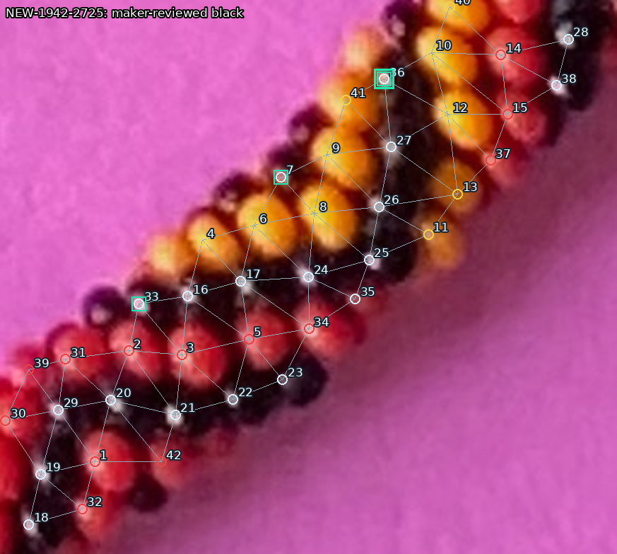


Exact local-number / stable-ID / original-coordinate key
1: C-1806-2907 (red; [1805.7692307692307, 2906.5384615384614]; [76, 74]) · 2: C-1822-2854 (red; [1821.8, 2854.3]; [76, 72]) · 3: C-1847-2856 (red; [1846.75, 2856.15]; [75, 72]) · 4: C-1856-2802 (yellow; [1856.4848484848485, 2802.242424242424]; [75, 70]) · 5: C-1879-2849 (red; [1878.4, 2848.8]; [74, 72]) · 6: C-1881-2795 (yellow; [1880.835294117647, 2795.2235294117645]; [74, 70]) · 7: C-1893-2771 (red; [1893.5714285714287, 2772.4285714285716]; [74, 69]) · 8: C-1910-2790 (yellow; [1909.1739130434783, 2789.5652173913045]; [73, 70]) · 9: C-1916-2762 (yellow; [1915.2830188679245, 2761.9245283018868]; [73, 69]) · 10: C-1964-2713 (yellow; [1964.4375, 2713.765625]; [71, 68]) · 11: C-1965-2799 (yellow; [1963.0, 2799.5]; [71, 71]) · 12: C-1973-2743 (yellow; [1972.204081632653, 2742.9591836734694]; [71, 69]) · 13: C-1977-2780 (yellow; [1976.875, 2780.475]; [71, 70]) · 14: C-1997-2715 (red; [1997.2692307692307, 2714.8846153846152]; [70, 68]) · 15: C-2001-2743 (red; [2000.3684210526317, 2742.842105263158]; [70, 69]) · 16: D40-K-1848-2825 (black; [1849.625, 2828.625]; [75, 71]) · 17: D40-K-1874-2821 (black; [1874.5, 2821.5]; [74, 71]) · 18: K-1774-2936 (black; [1774.5, 2936.0]; [77, 75]) · 19: K-1780-2910 (black; [1780.2, 2912.4]; [77, 74]) · 20: K-1813-2878 (black; [1813.3333333333333, 2877.5]; [76, 73]) · 21: K-1841-2884 (black; [1843.6666666666667, 2884.3333333333335]; [75, 73]) · 22: K-1868-2876 (black; [1870.857142857143, 2877.0]; [74, 73]) · 23: K-1894-2867 (black; [1894.3333333333333, 2867.8333333333335]; [73, 73]) · 24: K-1904-2820 (black; [1906.5, 2819.5]; [73, 71]) · 25: K-1935-2809 (black; [1935.0, 2811.5]; [72, 71]) · 26: K-1937-2783 (black; [1939.6666666666667, 2786.3333333333335]; [72, 70]) · 27: K-1943-2759 (black; [1945.6, 2758.2]; [72, 69]) · 28: K-2025-2705 (black; [2029.0, 2707.5]; [69, 68]) · 29: MAT25-K-1786-2881 (black; [1788.5, 2882.0]; [77, 73]) · 30: NEW-1764-2887 (red; [1763.6037463761936, 2887.0413300496393]; [78, 73]) · 31: NEW-1792-2858 (red; [1791.9685221558773, 2858.1962541952207]; [77, 72]) · 32: NEW-1799-2928 (red; [1799.7228103771517, 2928.737278945013]; [76, 75]) · 33: NEW-1828-2833 (red; [1826.527540719344, 2832.1546495176485]; [76, 71]) · 34: NEW-1906-2843 (red; [1906.7866535243456, 2843.8922062103697]; [73, 72]) · 35: NEW-1927-2829 (black; [1928.5063562626563, 2829.8032927698746]; [72, 72]) · 36: NEW-1942-2725 (red; [1942.2811091493152, 2726.2126713929165]; [72, 68]) · 37: NEW-1992-2765 (red; [1992.445253662645, 2764.562055852351]; [70, 70]) · 38: NEW-2022-2729 (black; [2023.4231758722603, 2729.2391871537984]; [69, 69]) · 39: R332-R-0078-0072 (red; [1774.575221238938, 2863.3185840707965]; [78, 72]) · 40: R332-Y-0071-0067 (yellow; [1973.2477876106195, 2692.2861356932153]; [71, 67]) · 41: R332-Y-0073-0068 (yellow; [1924.060606060606, 2736.060606060606]; [73, 68]) · 42: REC266-P140422 (red; [1837.0555555555557, 2906.6111111111113]; [75, 74])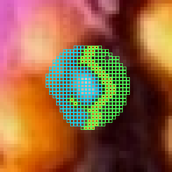
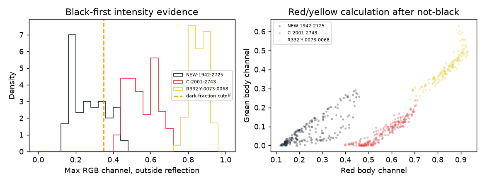
Used/excluded pixel counts and black-first test
{'id': 'NEW-1942-2725', 'name': 'pixel-maker-05', 'bbox': [np.int64(1918), np.int64(2702), np.int64(1967), np.int64(2751)], 'black_decision': 'black', 'classifier_prediction': 'black', 'body_count': 223, 'excluded_highlight_count': 209, 'annulus': {'ring_pixels': [[1943, 2715], [1944, 2715], [1945, 2715], [1942, 2716], [1943, 2716], [1944, 2716], [1942, 2717], [1943, 2717], [1944, 2717], [1941, 2718], [1942, 2718], [1943, 2718], [1941, 2719], [1942, 2719], [1943, 2719], [1944, 2719], [1943, 2720], [1944, 2720], [1945, 2720], [1944, 2721], [1945, 2721], [1946, 2721], [1945, 2722], [1946, 2722], [1947, 2722], [1946, 2723], [1947, 2723], [1948, 2723], [1947, 2724], [1948, 2724], [1949, 2724], [1947, 2725], [1948, 2725], [1949, 2725], [1948, 2726], [1949, 2726], [1950, 2726], [1948, 2727], [1949, 2727], [1950, 2727], [1948, 2728], [1949, 2728], [1950, 2728], [1947, 2729], [1948, 2729], [1949, 2729], [1938, 2730], [1946, 2730], [1947, 2730], [1948, 2730], [1939, 2731], [1945, 2731], [1946, 2731], [1947, 2731], [1944, 2732], [1945, 2732], [1946, 2732], [1943, 2733], [1944, 2733], [1945, 2733], [1944, 2734], [1945, 2734], [1946, 2734], [1944, 2735], [1945, 2735], [1946, 2735], [1943, 2736], [1944, 2736], [1945, 2736], [1943, 2737], [1944, 2737], [1945, 2737], [1942, 2738], [1943, 2738], [1944, 2738]], 'reflection_pixels': [[1939, 2715], [1940, 2715], [1941, 2715], [1936, 2716], [1937, 2716], [1938, 2716], [1939, 2716], [1940, 2716], [1935, 2717], [1936, 2717], [1937, 2717], [1938, 2717], [1939, 2717], [1940, 2717], [1934, 2718], [1935, 2718], [1936, 2718], [1937, 2718], [1938, 2718], [1939, 2718], [1933, 2719], [1934, 2719], [1935, 2719], [1936, 2719], [1937, 2719], [1938, 2719], [1939, 2719], [1933, 2720], [1934, 2720], [1935, 2720], [1936, 2720], [1937, 2720], [1938, 2720], [1939, 2720], [1932, 2721], [1933, 2721], [1934, 2721], [1935, 2721], [1936, 2721], [1937, 2721], [1938, 2721], [1939, 2721], [1940, 2721], [1941, 2721], [1942, 2721], [1932, 2722], [1933, 2722], [1934, 2722], [1935, 2722], [1936, 2722], [1937, 2722], [1938, 2722], [1939, 2722], [1940, 2722], [1941, 2722], [1942, 2722], [1943, 2722], [1931, 2723], [1932, 2723], [1933, 2723], [1934, 2723], [1935, 2723], [1936, 2723], [1937, 2723], [1938, 2723], [1939, 2723], [1940, 2723], [1941, 2723], [1942, 2723], [1943, 2723], [1944, 2723], [1931, 2724], [1932, 2724], [1933, 2724], [1934, 2724], [1935, 2724], [1936, 2724], [1937, 2724], [1938, 2724], [1939, 2724], [1940, 2724], [1941, 2724], [1942, 2724], [1943, 2724], [1944, 2724], [1945, 2724], [1931, 2725], [1932, 2725], [1933, 2725], [1934, 2725], [1935, 2725], [1936, 2725], [1937, 2725], [1938, 2725], [1939, 2725], [1940, 2725], [1941, 2725], [1942, 2725], [1943, 2725], [1944, 2725], [1945, 2725], [1931, 2726], [1932, 2726], [1933, 2726], [1934, 2726], [1935, 2726], [1936, 2726], [1937, 2726], [1938, 2726], [1939, 2726], [1940, 2726], [1941, 2726], [1942, 2726], [1943, 2726], [1944, 2726], [1945, 2726], [1946, 2726], [1932, 2727], [1933, 2727], [1934, 2727], [1935, 2727], [1936, 2727], [1937, 2727], [1938, 2727], [1939, 2727], [1940, 2727], [1941, 2727], [1942, 2727], [1943, 2727], [1944, 2727], [1945, 2727], [1946, 2727], [1932, 2728], [1933, 2728], [1934, 2728], [1935, 2728], [1936, 2728], [1937, 2728], [1938, 2728], [1939, 2728], [1940, 2728], [1941, 2728], [1942, 2728], [1943, 2728], [1944, 2728], [1945, 2728], [1946, 2728], [1933, 2729], [1934, 2729], [1935, 2729], [1936, 2729], [1937, 2729], [1939, 2729], [1940, 2729], [1941, 2729], [1942, 2729], [1943, 2729], [1944, 2729], [1945, 2729], [1934, 2730], [1935, 2730], [1936, 2730], [1940, 2730], [1941, 2730], [1942, 2730], [1943, 2730], [1944, 2730], [1934, 2731], [1935, 2731], [1936, 2731], [1937, 2731], [1941, 2731], [1942, 2731], [1943, 2731], [1935, 2732], [1936, 2732], [1937, 2732], [1938, 2732], [1940, 2732], [1935, 2733], [1936, 2733], [1937, 2733], [1938, 2733], [1939, 2733], [1940, 2733], [1941, 2733], [1936, 2734], [1937, 2734], [1938, 2734], [1939, 2734], [1940, 2734], [1941, 2734], [1942, 2734], [1936, 2735], [1937, 2735], [1938, 2735], [1939, 2735], [1940, 2735], [1941, 2735], [1942, 2735], [1937, 2736], [1938, 2736], [1939, 2736], [1940, 2736], [1941, 2736], [1938, 2737], [1939, 2737], [1940, 2737], [1941, 2737]], 'ring_count': 75, 'sectors': 5, 'median_intensity': 0.11473725490196078, 'q75_intensity': 0.1977019607843137, 'dark_fraction': 0.76, 'median_max_channel': 0.26666666666666666, 'q75_max_channel': 0.33529411764705885, 'raw_positive': True, 'raw_negative': False, 'geometry_valid': True, 'hue_used': False}, 'lighting': {'value': 0.553921568627451, 'ids': ['R332-Y-0073-0068', 'C-1916-2762', 'R332-Y-0071-0067', 'C-2001-2743', 'C-1977-2780', 'C-1998-2685', 'C-1910-2790', 'C-1965-2799', 'NEW-1999-2655', 'C-1881-2795'], 'RGB': [0.553921568627451, 0.13137254901960785, 0.041176470588235294], 'intensity': 0.2549421568627451}, 'comparisons': [{'id': 'C-2001-2743', 'xy': [2000.3684210526317, 2742.842105263158], 'color': 'red', 'section': 4}, {'id': 'R332-Y-0073-0068', 'xy': [1924.060606060606, 2736.060606060606], 'color': 'yellow', 'section': 4}], 'abstention_reasons': []}C-1893-2771
K-1904-2820 / comparison panel / local feature 7. red → black. maker-confirmed ordinary color misclassification. Measured support and lattice association stay fixed.
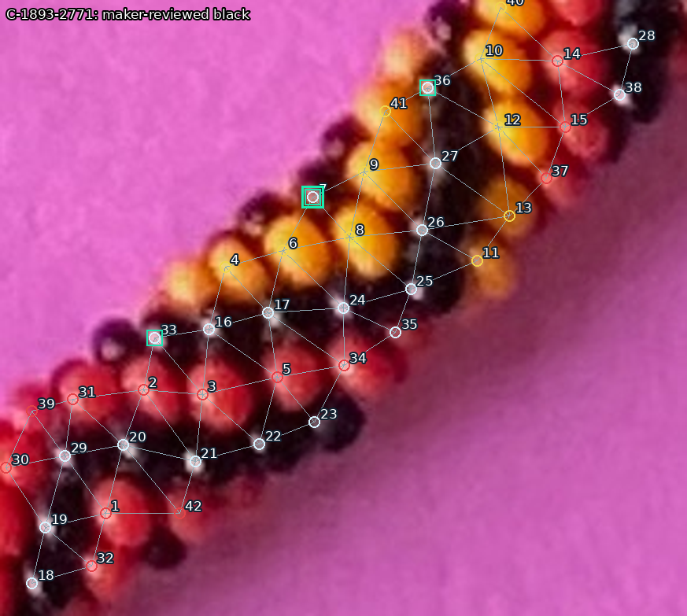
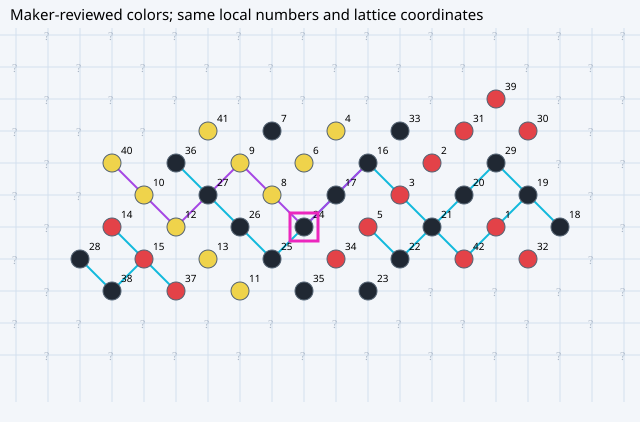

Exact local-number / stable-ID / original-coordinate key
1: C-1806-2907 (red; [1805.7692307692307, 2906.5384615384614]; [76, 74]) · 2: C-1822-2854 (red; [1821.8, 2854.3]; [76, 72]) · 3: C-1847-2856 (red; [1846.75, 2856.15]; [75, 72]) · 4: C-1856-2802 (yellow; [1856.4848484848485, 2802.242424242424]; [75, 70]) · 5: C-1879-2849 (red; [1878.4, 2848.8]; [74, 72]) · 6: C-1881-2795 (yellow; [1880.835294117647, 2795.2235294117645]; [74, 70]) · 7: C-1893-2771 (red; [1893.5714285714287, 2772.4285714285716]; [74, 69]) · 8: C-1910-2790 (yellow; [1909.1739130434783, 2789.5652173913045]; [73, 70]) · 9: C-1916-2762 (yellow; [1915.2830188679245, 2761.9245283018868]; [73, 69]) · 10: C-1964-2713 (yellow; [1964.4375, 2713.765625]; [71, 68]) · 11: C-1965-2799 (yellow; [1963.0, 2799.5]; [71, 71]) · 12: C-1973-2743 (yellow; [1972.204081632653, 2742.9591836734694]; [71, 69]) · 13: C-1977-2780 (yellow; [1976.875, 2780.475]; [71, 70]) · 14: C-1997-2715 (red; [1997.2692307692307, 2714.8846153846152]; [70, 68]) · 15: C-2001-2743 (red; [2000.3684210526317, 2742.842105263158]; [70, 69]) · 16: D40-K-1848-2825 (black; [1849.625, 2828.625]; [75, 71]) · 17: D40-K-1874-2821 (black; [1874.5, 2821.5]; [74, 71]) · 18: K-1774-2936 (black; [1774.5, 2936.0]; [77, 75]) · 19: K-1780-2910 (black; [1780.2, 2912.4]; [77, 74]) · 20: K-1813-2878 (black; [1813.3333333333333, 2877.5]; [76, 73]) · 21: K-1841-2884 (black; [1843.6666666666667, 2884.3333333333335]; [75, 73]) · 22: K-1868-2876 (black; [1870.857142857143, 2877.0]; [74, 73]) · 23: K-1894-2867 (black; [1894.3333333333333, 2867.8333333333335]; [73, 73]) · 24: K-1904-2820 (black; [1906.5, 2819.5]; [73, 71]) · 25: K-1935-2809 (black; [1935.0, 2811.5]; [72, 71]) · 26: K-1937-2783 (black; [1939.6666666666667, 2786.3333333333335]; [72, 70]) · 27: K-1943-2759 (black; [1945.6, 2758.2]; [72, 69]) · 28: K-2025-2705 (black; [2029.0, 2707.5]; [69, 68]) · 29: MAT25-K-1786-2881 (black; [1788.5, 2882.0]; [77, 73]) · 30: NEW-1764-2887 (red; [1763.6037463761936, 2887.0413300496393]; [78, 73]) · 31: NEW-1792-2858 (red; [1791.9685221558773, 2858.1962541952207]; [77, 72]) · 32: NEW-1799-2928 (red; [1799.7228103771517, 2928.737278945013]; [76, 75]) · 33: NEW-1828-2833 (red; [1826.527540719344, 2832.1546495176485]; [76, 71]) · 34: NEW-1906-2843 (red; [1906.7866535243456, 2843.8922062103697]; [73, 72]) · 35: NEW-1927-2829 (black; [1928.5063562626563, 2829.8032927698746]; [72, 72]) · 36: NEW-1942-2725 (red; [1942.2811091493152, 2726.2126713929165]; [72, 68]) · 37: NEW-1992-2765 (red; [1992.445253662645, 2764.562055852351]; [70, 70]) · 38: NEW-2022-2729 (black; [2023.4231758722603, 2729.2391871537984]; [69, 69]) · 39: R332-R-0078-0072 (red; [1774.575221238938, 2863.3185840707965]; [78, 72]) · 40: R332-Y-0071-0067 (yellow; [1973.2477876106195, 2692.2861356932153]; [71, 67]) · 41: R332-Y-0073-0068 (yellow; [1924.060606060606, 2736.060606060606]; [73, 68]) · 42: REC266-P140422 (red; [1837.0555555555557, 2906.6111111111113]; [75, 74])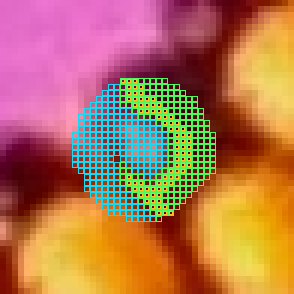
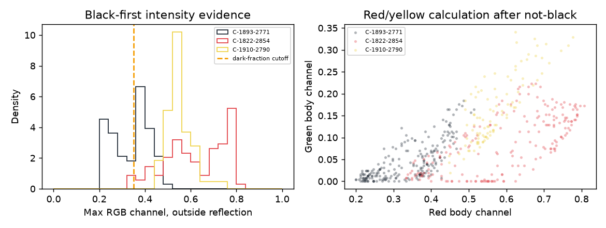
Used/excluded pixel counts and black-first test
{'id': 'C-1893-2771', 'name': 'pixel-maker-06', 'bbox': [np.int64(1870), np.int64(2748), np.int64(1919), np.int64(2797)], 'black_decision': 'unknown', 'classifier_prediction': '?', 'body_count': 223, 'excluded_highlight_count': 219, 'annulus': {'ring_pixels': [[1890, 2761], [1891, 2761], [1892, 2761], [1891, 2762], [1892, 2762], [1893, 2762], [1891, 2763], [1892, 2763], [1893, 2763], [1891, 2764], [1892, 2764], [1893, 2764], [1894, 2764], [1895, 2764], [1892, 2765], [1893, 2765], [1894, 2765], [1895, 2765], [1896, 2765], [1893, 2766], [1894, 2766], [1895, 2766], [1896, 2766], [1897, 2766], [1896, 2767], [1897, 2767], [1898, 2767], [1897, 2768], [1898, 2768], [1899, 2768], [1898, 2769], [1899, 2769], [1900, 2769], [1899, 2770], [1900, 2770], [1901, 2770], [1899, 2771], [1900, 2771], [1901, 2771], [1899, 2772], [1900, 2772], [1901, 2772], [1899, 2773], [1900, 2773], [1901, 2773], [1899, 2774], [1900, 2774], [1901, 2774], [1899, 2775], [1900, 2775], [1901, 2775], [1898, 2776], [1899, 2776], [1900, 2776], [1891, 2777], [1897, 2777], [1898, 2777], [1899, 2777], [1891, 2778], [1892, 2778], [1893, 2778], [1896, 2778], [1897, 2778], [1898, 2778], [1892, 2779], [1893, 2779], [1894, 2779], [1895, 2779], [1896, 2779], [1897, 2779], [1893, 2780], [1894, 2780], [1895, 2780], [1896, 2780], [1894, 2781], [1895, 2781], [1896, 2781], [1895, 2782], [1896, 2782], [1897, 2782], [1896, 2783], [1897, 2783], [1898, 2783]], 'reflection_pixels': [[1888, 2762], [1889, 2762], [1887, 2763], [1888, 2763], [1889, 2763], [1886, 2764], [1887, 2764], [1888, 2764], [1889, 2764], [1885, 2765], [1886, 2765], [1887, 2765], [1888, 2765], [1889, 2765], [1884, 2766], [1885, 2766], [1886, 2766], [1887, 2766], [1888, 2766], [1889, 2766], [1890, 2766], [1891, 2766], [1883, 2767], [1884, 2767], [1885, 2767], [1886, 2767], [1887, 2767], [1888, 2767], [1889, 2767], [1890, 2767], [1891, 2767], [1892, 2767], [1883, 2768], [1884, 2768], [1885, 2768], [1886, 2768], [1887, 2768], [1888, 2768], [1889, 2768], [1890, 2768], [1891, 2768], [1892, 2768], [1893, 2768], [1894, 2768], [1895, 2768], [1883, 2769], [1884, 2769], [1885, 2769], [1886, 2769], [1887, 2769], [1888, 2769], [1889, 2769], [1890, 2769], [1891, 2769], [1892, 2769], [1893, 2769], [1894, 2769], [1895, 2769], [1896, 2769], [1882, 2770], [1883, 2770], [1884, 2770], [1885, 2770], [1886, 2770], [1887, 2770], [1888, 2770], [1889, 2770], [1890, 2770], [1891, 2770], [1892, 2770], [1893, 2770], [1894, 2770], [1895, 2770], [1896, 2770], [1897, 2770], [1882, 2771], [1883, 2771], [1884, 2771], [1885, 2771], [1886, 2771], [1887, 2771], [1888, 2771], [1889, 2771], [1890, 2771], [1891, 2771], [1892, 2771], [1893, 2771], [1894, 2771], [1895, 2771], [1896, 2771], [1897, 2771], [1882, 2772], [1883, 2772], [1884, 2772], [1885, 2772], [1886, 2772], [1887, 2772], [1888, 2772], [1889, 2772], [1890, 2772], [1891, 2772], [1892, 2772], [1893, 2772], [1894, 2772], [1895, 2772], [1896, 2772], [1897, 2772], [1882, 2773], [1883, 2773], [1884, 2773], [1885, 2773], [1886, 2773], [1887, 2773], [1888, 2773], [1889, 2773], [1890, 2773], [1891, 2773], [1892, 2773], [1893, 2773], [1894, 2773], [1895, 2773], [1896, 2773], [1897, 2773], [1882, 2774], [1883, 2774], [1884, 2774], [1885, 2774], [1886, 2774], [1887, 2774], [1888, 2774], [1890, 2774], [1891, 2774], [1892, 2774], [1893, 2774], [1894, 2774], [1895, 2774], [1896, 2774], [1897, 2774], [1882, 2775], [1883, 2775], [1884, 2775], [1885, 2775], [1886, 2775], [1887, 2775], [1888, 2775], [1889, 2775], [1891, 2775], [1892, 2775], [1893, 2775], [1894, 2775], [1895, 2775], [1896, 2775], [1897, 2775], [1883, 2776], [1884, 2776], [1885, 2776], [1886, 2776], [1887, 2776], [1888, 2776], [1889, 2776], [1892, 2776], [1893, 2776], [1894, 2776], [1895, 2776], [1896, 2776], [1884, 2777], [1885, 2777], [1886, 2777], [1887, 2777], [1888, 2777], [1889, 2777], [1894, 2777], [1895, 2777], [1884, 2778], [1885, 2778], [1886, 2778], [1887, 2778], [1888, 2778], [1889, 2778], [1884, 2779], [1885, 2779], [1886, 2779], [1887, 2779], [1888, 2779], [1889, 2779], [1890, 2779], [1885, 2780], [1886, 2780], [1887, 2780], [1888, 2780], [1889, 2780], [1890, 2780], [1891, 2780], [1886, 2781], [1887, 2781], [1888, 2781], [1889, 2781], [1890, 2781], [1891, 2781], [1892, 2781], [1887, 2782], [1888, 2782], [1889, 2782], [1890, 2782], [1891, 2782], [1892, 2782], [1893, 2782], [1888, 2783], [1889, 2783], [1890, 2783], [1891, 2783], [1892, 2783], [1893, 2783], [1894, 2783], [1891, 2784], [1892, 2784], [1893, 2784], [1894, 2784], [1895, 2784]], 'ring_count': 83, 'sectors': 4, 'median_intensity': 0.12416078431372549, 'q75_intensity': 0.1647470588235294, 'dark_fraction': 0.46987951807228917, 'median_max_channel': 0.3607843137254902, 'q75_max_channel': 0.39607843137254906, 'raw_positive': False, 'raw_negative': False, 'geometry_valid': True, 'hue_used': False}, 'lighting': {'value': 0.553921568627451, 'ids': ['C-1910-2790', 'C-1916-2762', 'C-1881-2795', 'R332-Y-0073-0068', 'C-1856-2802', 'C-1965-2799', 'C-1977-2780', 'C-1822-2854', 'C-2001-2743', 'R332-Y-0071-0067'], 'RGB': [0.553921568627451, 0.1450980392156863, 0.03725490196078431], 'intensity': 0.25349509803921566}, 'comparisons': [{'id': 'C-1822-2854', 'xy': [1821.8, 2854.3], 'color': 'red', 'section': 4}, {'id': 'C-1910-2790', 'xy': [1909.1739130434783, 2789.5652173913045], 'color': 'yellow', 'section': 4}], 'abstention_reasons': ['intensity-only black test is ambiguous or lacks surrounding material']}NEW-1828-2833
K-1904-2820 / comparison panel / local feature 33. red → black. maker-confirmed ordinary color misclassification. Measured support and lattice association stay fixed.
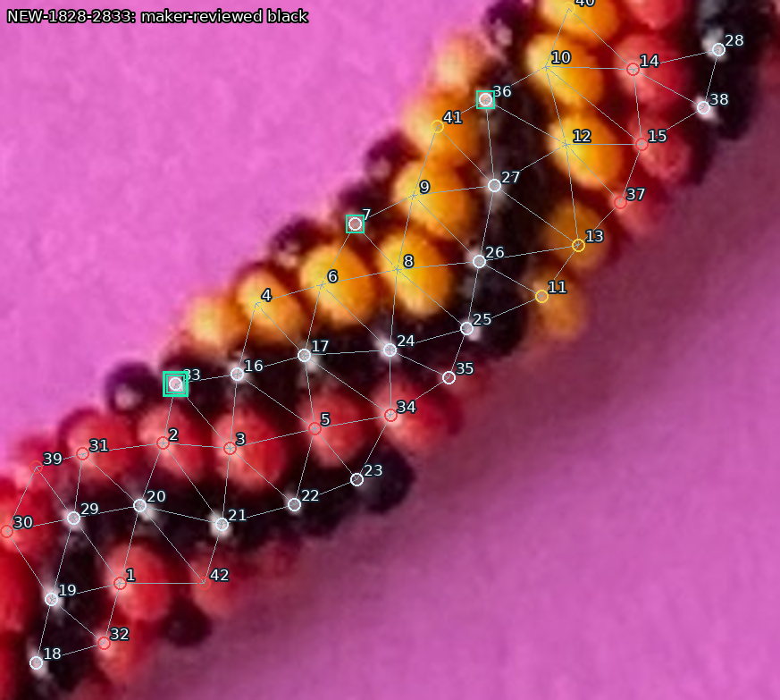


Exact local-number / stable-ID / original-coordinate key
1: C-1806-2907 (red; [1805.7692307692307, 2906.5384615384614]; [76, 74]) · 2: C-1822-2854 (red; [1821.8, 2854.3]; [76, 72]) · 3: C-1847-2856 (red; [1846.75, 2856.15]; [75, 72]) · 4: C-1856-2802 (yellow; [1856.4848484848485, 2802.242424242424]; [75, 70]) · 5: C-1879-2849 (red; [1878.4, 2848.8]; [74, 72]) · 6: C-1881-2795 (yellow; [1880.835294117647, 2795.2235294117645]; [74, 70]) · 7: C-1893-2771 (red; [1893.5714285714287, 2772.4285714285716]; [74, 69]) · 8: C-1910-2790 (yellow; [1909.1739130434783, 2789.5652173913045]; [73, 70]) · 9: C-1916-2762 (yellow; [1915.2830188679245, 2761.9245283018868]; [73, 69]) · 10: C-1964-2713 (yellow; [1964.4375, 2713.765625]; [71, 68]) · 11: C-1965-2799 (yellow; [1963.0, 2799.5]; [71, 71]) · 12: C-1973-2743 (yellow; [1972.204081632653, 2742.9591836734694]; [71, 69]) · 13: C-1977-2780 (yellow; [1976.875, 2780.475]; [71, 70]) · 14: C-1997-2715 (red; [1997.2692307692307, 2714.8846153846152]; [70, 68]) · 15: C-2001-2743 (red; [2000.3684210526317, 2742.842105263158]; [70, 69]) · 16: D40-K-1848-2825 (black; [1849.625, 2828.625]; [75, 71]) · 17: D40-K-1874-2821 (black; [1874.5, 2821.5]; [74, 71]) · 18: K-1774-2936 (black; [1774.5, 2936.0]; [77, 75]) · 19: K-1780-2910 (black; [1780.2, 2912.4]; [77, 74]) · 20: K-1813-2878 (black; [1813.3333333333333, 2877.5]; [76, 73]) · 21: K-1841-2884 (black; [1843.6666666666667, 2884.3333333333335]; [75, 73]) · 22: K-1868-2876 (black; [1870.857142857143, 2877.0]; [74, 73]) · 23: K-1894-2867 (black; [1894.3333333333333, 2867.8333333333335]; [73, 73]) · 24: K-1904-2820 (black; [1906.5, 2819.5]; [73, 71]) · 25: K-1935-2809 (black; [1935.0, 2811.5]; [72, 71]) · 26: K-1937-2783 (black; [1939.6666666666667, 2786.3333333333335]; [72, 70]) · 27: K-1943-2759 (black; [1945.6, 2758.2]; [72, 69]) · 28: K-2025-2705 (black; [2029.0, 2707.5]; [69, 68]) · 29: MAT25-K-1786-2881 (black; [1788.5, 2882.0]; [77, 73]) · 30: NEW-1764-2887 (red; [1763.6037463761936, 2887.0413300496393]; [78, 73]) · 31: NEW-1792-2858 (red; [1791.9685221558773, 2858.1962541952207]; [77, 72]) · 32: NEW-1799-2928 (red; [1799.7228103771517, 2928.737278945013]; [76, 75]) · 33: NEW-1828-2833 (red; [1826.527540719344, 2832.1546495176485]; [76, 71]) · 34: NEW-1906-2843 (red; [1906.7866535243456, 2843.8922062103697]; [73, 72]) · 35: NEW-1927-2829 (black; [1928.5063562626563, 2829.8032927698746]; [72, 72]) · 36: NEW-1942-2725 (red; [1942.2811091493152, 2726.2126713929165]; [72, 68]) · 37: NEW-1992-2765 (red; [1992.445253662645, 2764.562055852351]; [70, 70]) · 38: NEW-2022-2729 (black; [2023.4231758722603, 2729.2391871537984]; [69, 69]) · 39: R332-R-0078-0072 (red; [1774.575221238938, 2863.3185840707965]; [78, 72]) · 40: R332-Y-0071-0067 (yellow; [1973.2477876106195, 2692.2861356932153]; [71, 67]) · 41: R332-Y-0073-0068 (yellow; [1924.060606060606, 2736.060606060606]; [73, 68]) · 42: REC266-P140422 (red; [1837.0555555555557, 2906.6111111111113]; [75, 74])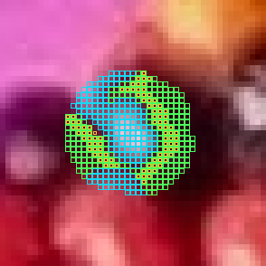
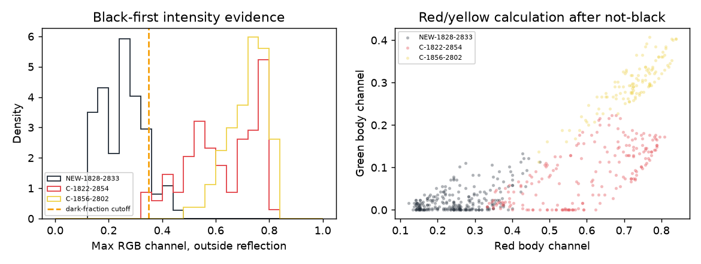
Used/excluded pixel counts and black-first test
{'id': 'NEW-1828-2833', 'name': 'pixel-maker-07', 'bbox': [np.int64(1803), np.int64(2808), np.int64(1852), np.int64(2857)], 'black_decision': 'black', 'classifier_prediction': 'black', 'body_count': 246, 'excluded_highlight_count': 185, 'annulus': {'ring_pixels': [[1829, 2821], [1828, 2822], [1829, 2822], [1830, 2822], [1827, 2823], [1828, 2823], [1829, 2823], [1825, 2824], [1826, 2824], [1827, 2824], [1828, 2824], [1829, 2824], [1828, 2825], [1829, 2825], [1830, 2825], [1829, 2826], [1830, 2826], [1831, 2826], [1830, 2827], [1831, 2827], [1832, 2827], [1831, 2828], [1832, 2828], [1833, 2828], [1815, 2829], [1816, 2829], [1831, 2829], [1832, 2829], [1833, 2829], [1815, 2830], [1816, 2830], [1817, 2830], [1831, 2830], [1832, 2830], [1833, 2830], [1816, 2831], [1817, 2831], [1818, 2831], [1819, 2831], [1832, 2831], [1833, 2831], [1834, 2831], [1817, 2832], [1818, 2832], [1819, 2832], [1820, 2832], [1833, 2832], [1834, 2832], [1835, 2832], [1818, 2833], [1819, 2833], [1820, 2833], [1821, 2833], [1833, 2833], [1834, 2833], [1835, 2833], [1819, 2834], [1820, 2834], [1821, 2834], [1833, 2834], [1834, 2834], [1835, 2834], [1819, 2835], [1820, 2835], [1821, 2835], [1833, 2835], [1834, 2835], [1835, 2835], [1820, 2836], [1821, 2836], [1822, 2836], [1832, 2836], [1833, 2836], [1834, 2836], [1821, 2837], [1822, 2837], [1823, 2837], [1831, 2837], [1832, 2837], [1833, 2837], [1822, 2838], [1823, 2838], [1824, 2838], [1830, 2838], [1831, 2838], [1832, 2838], [1829, 2839], [1830, 2839], [1831, 2839], [1828, 2840], [1829, 2840], [1830, 2840], [1829, 2841]], 'reflection_pixels': [[1823, 2821], [1824, 2821], [1825, 2821], [1826, 2821], [1827, 2821], [1821, 2822], [1822, 2822], [1823, 2822], [1824, 2822], [1825, 2822], [1826, 2822], [1819, 2823], [1820, 2823], [1821, 2823], [1822, 2823], [1823, 2823], [1824, 2823], [1818, 2824], [1819, 2824], [1820, 2824], [1821, 2824], [1822, 2824], [1817, 2825], [1818, 2825], [1819, 2825], [1820, 2825], [1821, 2825], [1822, 2825], [1817, 2826], [1818, 2826], [1819, 2826], [1820, 2826], [1821, 2826], [1822, 2826], [1824, 2826], [1825, 2826], [1826, 2826], [1827, 2826], [1816, 2827], [1817, 2827], [1818, 2827], [1819, 2827], [1820, 2827], [1821, 2827], [1822, 2827], [1823, 2827], [1824, 2827], [1825, 2827], [1826, 2827], [1827, 2827], [1828, 2827], [1817, 2828], [1818, 2828], [1819, 2828], [1820, 2828], [1821, 2828], [1822, 2828], [1823, 2828], [1824, 2828], [1825, 2828], [1826, 2828], [1827, 2828], [1828, 2828], [1829, 2828], [1818, 2829], [1819, 2829], [1820, 2829], [1821, 2829], [1822, 2829], [1823, 2829], [1824, 2829], [1825, 2829], [1826, 2829], [1827, 2829], [1828, 2829], [1829, 2829], [1820, 2830], [1821, 2830], [1822, 2830], [1823, 2830], [1824, 2830], [1825, 2830], [1826, 2830], [1827, 2830], [1828, 2830], [1829, 2830], [1821, 2831], [1822, 2831], [1823, 2831], [1824, 2831], [1825, 2831], [1826, 2831], [1827, 2831], [1828, 2831], [1829, 2831], [1830, 2831], [1822, 2832], [1823, 2832], [1824, 2832], [1825, 2832], [1826, 2832], [1827, 2832], [1828, 2832], [1829, 2832], [1830, 2832], [1831, 2832], [1823, 2833], [1824, 2833], [1825, 2833], [1826, 2833], [1827, 2833], [1828, 2833], [1829, 2833], [1830, 2833], [1831, 2833], [1823, 2834], [1824, 2834], [1825, 2834], [1826, 2834], [1827, 2834], [1828, 2834], [1829, 2834], [1830, 2834], [1831, 2834], [1823, 2835], [1824, 2835], [1825, 2835], [1826, 2835], [1827, 2835], [1828, 2835], [1829, 2835], [1830, 2835], [1831, 2835], [1824, 2836], [1825, 2836], [1826, 2836], [1827, 2836], [1828, 2836], [1829, 2836], [1830, 2836], [1825, 2837], [1826, 2837], [1827, 2837], [1828, 2837], [1829, 2837], [1827, 2838], [1828, 2838]], 'ring_count': 93, 'sectors': 7, 'median_intensity': 0.09381176470588234, 'q75_intensity': 0.11768235294117646, 'dark_fraction': 0.9032258064516129, 'median_max_channel': 0.25882352941176473, 'q75_max_channel': 0.30196078431372547, 'raw_positive': True, 'raw_negative': False, 'geometry_valid': True, 'hue_used': False}, 'lighting': {'value': 0.653921568627451, 'ids': ['C-1822-2854', 'C-1856-2802', 'NEW-1792-2858', 'R332-R-0078-0072', 'C-1881-2795', 'NEW-1764-2887', 'C-1910-2790', 'C-1740-2888', 'CORE-1752-2910', 'C-1916-2762'], 'RGB': [0.653921568627451, 0.10392156862745097, 0.07549019607843137], 'intensity': 0.2626705882352941}, 'comparisons': [{'id': 'C-1822-2854', 'xy': [1821.8, 2854.3], 'color': 'red', 'section': 4}, {'id': 'C-1856-2802', 'xy': [1856.4848484848485, 2802.242424242424], 'color': 'yellow', 'section': 4}], 'abstention_reasons': []}R332-R-0025-0023
R332-R-0025-0023 / target panel / local feature 27. yellow → black. maker-confirmed wrong visible body / observation location. Yellow C-2058-0820 remains a separate unindexed observation; the magenta cross is old27 and the green box is its new black-body support.


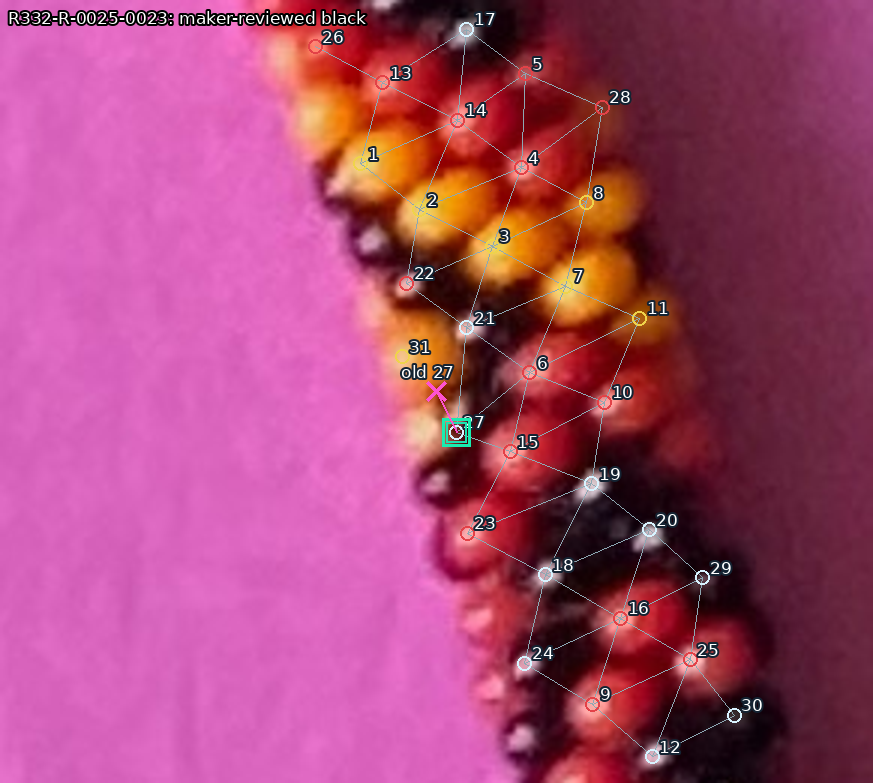
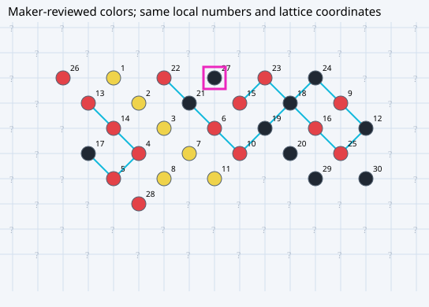

Exact local-number / stable-ID / original-coordinate key
1: C-2045-0755 (yellow; [2044.2264150943397, 755.5094339622642]; [23, 21]) · 2: C-2064-0771 (yellow; [2063.844827586207, 770.8448275862069]; [23, 22]) · 3: C-2088-0783 (yellow; [2088.086956521739, 783.1086956521739]; [23, 23]) · 4: C-2098-0756 (red; [2097.75, 756.85]; [22, 23]) · 5: C-2099-0725 (red; [2099.1428571428573, 725.6190476190476]; [21, 23]) · 6: C-2102-0824 (red; [2100.6666666666665, 825.2222222222222]; [24, 24]) · 7: C-2113-0796 (yellow; [2112.625, 796.4375]; [23, 24]) · 8: C-2120-0769 (yellow; [2119.3333333333335, 768.6666666666666]; [22, 24]) · 9: C-2122-0936 (red; [2121.6666666666665, 935.8055555555555]; [27, 26]) · 10: C-2126-0835 (red; [2125.5, 835.0]; [24, 25]) · 11: C-2137-0808 (yellow; [2137.2272727272725, 807.1363636363636]; [23, 25]) · 12: D40-K-2140-0953 (black; [2141.375, 953.25]; [27, 27]) · 13: E5-2052-0728 (red; [2051.653846153846, 728.5769230769231]; [22, 21]) · 14: E5-2077-0741 (red; [2076.5925925925926, 741.0370370370371]; [22, 22]) · 15: E5-2094-0852 (red; [2094.1428571428573, 851.5714285714286]; [25, 24]) · 16: E5-2131-0907 (red; [2130.8846153846152, 907.1538461538462]; [26, 26]) · 17: K-2077-0713 (black; [2079.6, 710.8]; [21, 22]) · 18: K-2104-0894 (black; [2105.769230769231, 892.5384615384615]; [26, 25]) · 19: K-2118-0864 (black; [2121.3, 862.2]; [25, 25]) · 20: K-2138-0880 (black; [2140.3333333333335, 877.6666666666666]; [25, 26]) · 21: MAT25-K-2078-0812 (black; [2079.5625, 810.1875]; [24, 23]) · 22: NEW-2060-796 (red; [2059.532919469885, 795.4712481079486]; [24, 22]) · 23: NEW-2080-878 (red; [2079.8301259086766, 878.7120470118456]; [26, 24]) · 24: NEW-2100-921 (black; [2098.9646691849584, 922.0685768767825]; [27, 25]) · 25: P5-2154-0921 (red; [2154.125, 920.875]; [26, 27]) · 26: R332-R-0022-0020 (red; [2029.0345911949685, 716.6163522012579]; [22, 20]) · 27: R332-R-0025-0023 (yellow; [2069.406896551724, 831.6551724137931]; [25, 23]) · 28: REC266-P035619 (red; [2124.722222222222, 736.6944444444445]; [21, 24]) · 29: REC266-P042986 (black; [2158.285714285714, 893.5714285714286]; [25, 27]) · 30: REC266-P045234 (black; [2168.733333333333, 939.4666666666667]; [26, 28]) · 31: C-2058-0820 (yellow; [2058.05, 819.875]; None)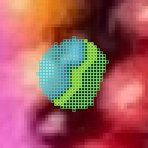
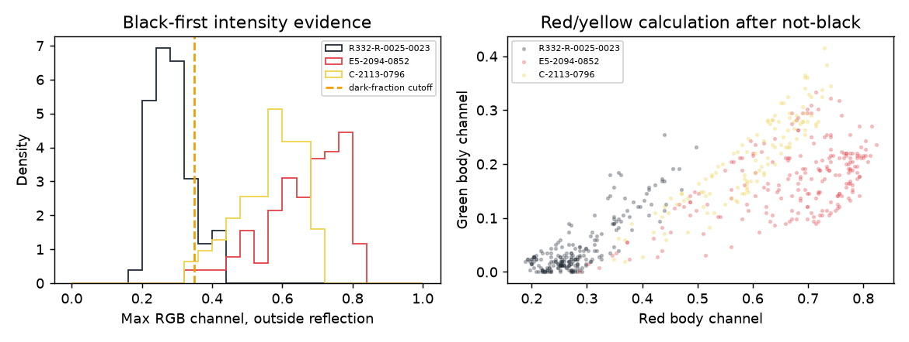
Used/excluded pixel counts and black-first test
{'id': 'R332-R-0025-0023', 'name': 'pixel-maker-08', 'bbox': [np.int64(2052), np.int64(821), np.int64(2101), np.int64(870)], 'black_decision': 'black', 'classifier_prediction': 'black', 'body_count': 213, 'excluded_highlight_count': 200, 'annulus': {'ring_pixels': [[2080, 834], [2081, 835], [2082, 835], [2081, 836], [2082, 836], [2083, 836], [2081, 837], [2082, 837], [2083, 837], [2081, 838], [2082, 838], [2083, 838], [2081, 839], [2082, 839], [2083, 839], [2081, 840], [2082, 840], [2083, 840], [2080, 841], [2081, 841], [2082, 841], [2079, 842], [2080, 842], [2081, 842], [2078, 843], [2079, 843], [2080, 843], [2076, 844], [2077, 844], [2078, 844], [2079, 844], [2076, 845], [2077, 845], [2078, 845], [2076, 846], [2077, 846], [2078, 846], [2076, 847], [2077, 847], [2078, 847], [2076, 848], [2077, 848], [2078, 848], [2076, 849], [2077, 849], [2078, 849], [2075, 850], [2076, 850], [2077, 850], [2074, 851], [2075, 851], [2076, 851], [2073, 852], [2074, 852], [2075, 852], [2072, 853], [2073, 853], [2074, 853], [2070, 854], [2071, 854], [2072, 854], [2073, 854], [2070, 855], [2071, 855], [2072, 855]], 'reflection_pixels': [[2076, 833], [2073, 834], [2074, 834], [2075, 834], [2076, 834], [2077, 834], [2078, 834], [2070, 835], [2072, 835], [2073, 835], [2074, 835], [2075, 835], [2076, 835], [2077, 835], [2078, 835], [2079, 835], [2069, 836], [2070, 836], [2071, 836], [2072, 836], [2073, 836], [2074, 836], [2075, 836], [2076, 836], [2077, 836], [2078, 836], [2079, 836], [2068, 837], [2069, 837], [2070, 837], [2071, 837], [2072, 837], [2073, 837], [2074, 837], [2075, 837], [2076, 837], [2077, 837], [2078, 837], [2079, 837], [2067, 838], [2068, 838], [2069, 838], [2070, 838], [2071, 838], [2072, 838], [2073, 838], [2074, 838], [2075, 838], [2076, 838], [2077, 838], [2078, 838], [2079, 838], [2066, 839], [2067, 839], [2068, 839], [2069, 839], [2070, 839], [2071, 839], [2072, 839], [2073, 839], [2074, 839], [2075, 839], [2076, 839], [2077, 839], [2078, 839], [2079, 839], [2066, 840], [2067, 840], [2068, 840], [2069, 840], [2070, 840], [2071, 840], [2072, 840], [2073, 840], [2074, 840], [2075, 840], [2076, 840], [2077, 840], [2078, 840], [2079, 840], [2065, 841], [2066, 841], [2067, 841], [2068, 841], [2069, 841], [2070, 841], [2071, 841], [2072, 841], [2073, 841], [2074, 841], [2075, 841], [2076, 841], [2077, 841], [2078, 841], [2065, 842], [2066, 842], [2067, 842], [2068, 842], [2069, 842], [2070, 842], [2071, 842], [2072, 842], [2073, 842], [2074, 842], [2075, 842], [2076, 842], [2077, 842], [2065, 843], [2066, 843], [2067, 843], [2068, 843], [2069, 843], [2070, 843], [2071, 843], [2072, 843], [2073, 843], [2074, 843], [2065, 844], [2066, 844], [2067, 844], [2068, 844], [2069, 844], [2070, 844], [2071, 844], [2072, 844], [2073, 844], [2074, 844], [2064, 845], [2065, 845], [2066, 845], [2067, 845], [2068, 845], [2069, 845], [2070, 845], [2071, 845], [2072, 845], [2073, 845], [2074, 845], [2065, 846], [2066, 846], [2067, 846], [2068, 846], [2069, 846], [2070, 846], [2071, 846], [2072, 846], [2073, 846], [2074, 846], [2065, 847], [2066, 847], [2067, 847], [2068, 847], [2069, 847], [2070, 847], [2071, 847], [2072, 847], [2073, 847], [2074, 847], [2065, 848], [2066, 848], [2067, 848], [2068, 848], [2069, 848], [2070, 848], [2071, 848], [2072, 848], [2073, 848], [2074, 848], [2065, 849], [2066, 849], [2067, 849], [2068, 849], [2069, 849], [2070, 849], [2071, 849], [2072, 849], [2073, 849], [2074, 849], [2066, 850], [2067, 850], [2068, 850], [2069, 850], [2070, 850], [2071, 850], [2072, 850], [2073, 850], [2066, 851], [2067, 851], [2068, 851], [2069, 851], [2070, 851], [2071, 851], [2072, 851], [2067, 852], [2068, 852], [2069, 852], [2070, 852], [2071, 852], [2068, 853], [2069, 853]], 'ring_count': 65, 'sectors': 4, 'median_intensity': 0.11306274509803921, 'q75_intensity': 0.14406666666666665, 'dark_fraction': 0.8615384615384616, 'median_max_channel': 0.27450980392156865, 'q75_max_channel': 0.3176470588235294, 'raw_positive': True, 'raw_negative': False, 'geometry_valid': True, 'hue_used': False}, 'lighting': {'value': 0.5941176470588235, 'ids': ['E5-2094-0852', 'C-2102-0824', 'NEW-2080-878', 'C-2113-0796', 'C-2088-0783', 'C-2137-0808', 'C-2064-0771', 'E5-2131-0907', 'C-2120-0769', 'C-2098-0756'], 'RGB': [0.5941176470588235, 0.12352941176470589, 0.03137254901960784], 'intensity': 0.2758186274509804}, 'comparisons': [{'id': 'E5-2094-0852', 'xy': [2094.1428571428573, 851.5714285714286], 'color': 'red', 'section': 1}, {'id': 'C-2113-0796', 'xy': [2112.625, 796.4375], 'color': 'yellow', 'section': 1}], 'abstention_reasons': []}Additional classification candidates — unconfirmed
All1600 recorded/provisional/native candidate supports were scanned, including65 provisional black groups. Intensity-only darkness can still confuse shaded red or a seam with black glass. These examples are hypotheses, not accepted edits. The full ranking and abstentions are exported.
NEW-2237-1522 — provisional
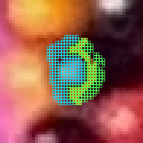
Recorded red; body test black. Working degree 4; separate spatial expectation black.
REC266-P032517 — provisional
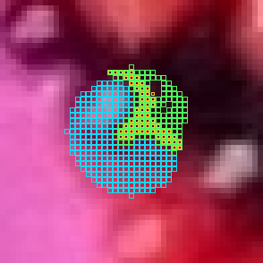
Recorded red; body test black. Working degree 3; separate spatial expectation black.
C-1284-0332 — provisional
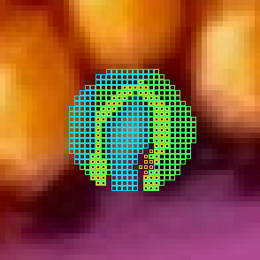
Recorded red; body test black. Working degree 3; separate spatial expectation black.
NEW-2257-2004 — provisional
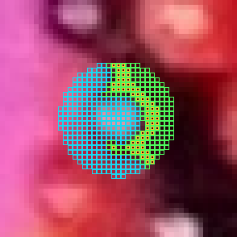
Recorded red; body test black. Working degree 3; separate spatial expectation black.
NEW-2060-796 — provisional
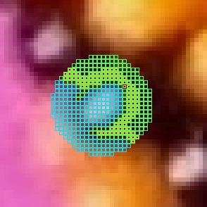
Recorded red; body test black. Working degree 3; separate spatial expectation black.
NEW-2186-2343 — provisional
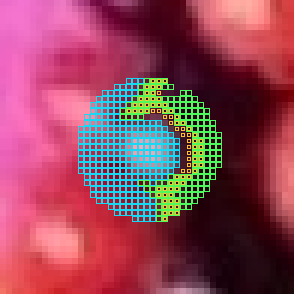
Recorded red; body test black. Working degree 3; separate spatial expectation black.
Remaining structural ambiguity
Use the layer selector to compare resolved and remaining breaks. The report tests every200–399 repeat, both A/B conventions, saved coherent maps and repeat-derived stripe changes. A stripe compression can improve a maker-compatible periodic fit while violating measured links; rejected transformations remain separate diagnostics.